| 번호 | 교과서·단원 | 원 기출 / 핵심 이론 | 별점 | 문제 쪽 | 해설 쪽 |
|---|---|---|---|---|---|
| 1 | 비상교육 중1 Ⅳ | 2025 화학 B3 · 2022 화학 B4 (로슨 순환학습) · 2026 생물 A7 참고 | ★★★★★ | 2 | 22 |
| 2 | 비상교육 중1 Ⅳ | 2026 화학 A5 (실험 과정 오류·오차) · 2025 화학 B5 (측정 신뢰도) | ★★★★★ | 3 | 23 |
| 3 | 비상교육 중1 Ⅳ | 2026 화학 B3 · 2026 물리 B3 (비고츠키) · 2016 화학 (ZPD·비계) | ★★★★☆ | 4 | 24 |
| 4 | 비상교육 중1 Ⅳ | 2026 화학 B4 · 2014 화학 (하위적·병위적 학습) · 2026 생물 B4·지구 B4 참고 | ★★★★☆ | 5 | 25 |
| 5 | 비상교육·미래엔 중1 Ⅳ | 2015 화학 (교육과정 수준 벗어난 지도) · 2026 화학 A7 · 2026 물리 B4 참고 | ★★★★★ | 6 | 26 |
| 6 | 비상교육·미래엔 중1 Ⅳ | 2025 화학 A7 · 2016 화학 (하슈웨 인지 갈등) · 2024 생물 B3 참고 | ★★★★☆ | 7 | 27 |
| 7 | 비상교육·미래엔 중1 Ⅳ | 2026 지구 A7 (평가 계획·채점 기준·피드백) · 2016 화학 (분석적 채점표) · 2025 화학 B5 | ★★★★★ | 8 | 28 |
| 8 | 비상교육 중1 Ⅵ | 2022 화학 B3 · 2025 화학 A5 (디지털 소양·지도 범위) · 2026 지구 B5 참고 | ★★★★★ | 9 | 29 |
| 9 | 비상교육·미래엔 중2 Ⅰ | 2017 화학 논술 (밀도·포스너) · 2026 화학 B3 (개념 변화 조건) | ★★★★☆ | 10 | 30 |
| 10 | 비상교육 중2 Ⅰ | 2017 화학 (피아제 비례 논리) · 2021 화학 A6 (지도 범위) · 2026 생물 B4 참고 | ★★★★☆ | 11 | 31 |
| 11 | 비상교육 중2 Ⅰ | 2023 화학 A5 (귀추법) · 2026 지구 A6 (귀추적 탐구) 참고 | ★★★★★ | 12 | 32 |
| 12 | 미래엔 중2 Ⅰ | 2023 화학 A7 (헤론 탐구 수준) · 2024 화학 A5 (협동 학습) · 2026 지구 B5 참고 | ★★★★☆ | 13 | 33 |
| 13 | 미래엔 중2 Ⅳ | 2019 화학 논술 (쿤) · 2026 화학 A6 (교수·학습의 과학의 본성) · 2026 물리 A6 참고 | ★★★★★ | 14 | 34 |
| 14 | 비상교육·미래엔 중2 Ⅳ | 2026 화학 A7 (성취기준 해설에 근거한 잘못된 진술 찾기) · 2025 생물 A7 (비유) 참고 | ★★★★★ | 15 | 35 |
| 15 | 비상교육 중2 Ⅳ | 2026 화학 A7 (교육과정 범위) · 2022 화학 A5 (주기율표 예측) | ★★★★★ | 16 | 36 |
| 16 | 비상교육 중3 Ⅰ | 2022 화학 B3 · 2023 화학 A6 (브루너 표상 양식) · 2024 물리 B5 참고 | ★★★★☆ | 17 | 37 |
| 17 | 비상교육 중3 Ⅰ | 2025 화학 A7 · 2022 화학 A7 (질량 보존) · 2026 지구 A5 (툴민 논증) | ★★★★★ | 18 | 38 |
| 18 | 비상교육 중3 Ⅰ | 2025 화학 B5 (측정 신뢰도·타당도) · 2022 화학 B3 (자료 변환) · 2025 화학 A6 (귀납) 참고 | ★★★★☆ | 19 | 39 |
| 19 | 비상교육 중3 Ⅰ | 2022 화학 A5 (라카토슈) · 2025 지구 A6 · 2026 생물 A6 (연구 프로그램) · 2023 화학 A5 (기체 반응 법칙) | ★★★★☆ | 20 | 40 |
| 20 | 비상교육 중3 Ⅰ | 2021 화학 A7 · 2023 화학 B5 (STS 수업 모형) · 2024 화학 A6 (22개정 설계) 참고 | ★★★★☆ | 21 | 41 |
1. <자료 1>은 예비 교사가 계획한 수업의 일부이고, <자료 2>는 지도 교사와의 대화, <자료 3>은 관련 성취기준과 성취기준 해설이다. <작성 방법>에 따라 서술하시오. [4점]
◦ 학습 목표: 물질의 세 가지 상태의 특징을 알고, 그 차이를 입자 배열로 설명할 수 있다.
| 단계 | 교수·학습 활동 |
|---|---|
| 탐색 | ∙“물질의 상태에 따라 어떤 특징이 있을까?”라는 질문을 제시한다. ∙플라스틱 블록과 주스를 모양이 다른 컵에 옮기고, 주스와 공기를 각각 넣은 주사기의 피스톤을 눌러 모양과 부피 변화를 관찰한다. ∙관찰 결과를 표로 정리하여 상태별 규칙성을 찾는다. |
| 용어 도입 | ∙교사는 ‘입자 모형’을 도입한다. |
| 적용 | ∙둥근 과자와 이쑤시개로 고체·액체·기체의 입자 모형을 만든다. |
지도 교사: 이 수업은 로슨(A. Lawson)의 순환학습 모형 중 ( ㉠ )이네요.
예비 교사: 다음 차시는 “물이 끓는 동안 온도가 일정하게 유지되는 까닭은 무엇일까?”라는 질문으로 시작하고, 학생들이 ㉡앞에서 학습한 ‘상태 변화와 입자 배열의 변화’를 끌어와 잠정적인 설명을 만들게 하려고 해요.
지도 교사: 그러면 ( ㉢ )을/를 적용할 수 있겠군요.
예비 교사: 그런데 입자 모형 활동에서 ㉣같은 물질인데도 고체는 작은 원으로, 기체는 큰 원으로 그린 학생이 있었어요.
◦ 2022 개정 과학과 교육과정(교육부 고시 제2022-33호)
[9과04-02] 물질의 세 가지 상태의 특징을 설명하고, 이를 입자 모형으로 표현할 수 있다.
(가) 성취기준 해설: [9과04-02] 물질의 상태를 나타내는 입자 모형은 입자 사이의 ( ㉤ ), 입자 배열의 불규칙한 정도, 입자의 ( ㉥ ) 등을 비교한 내용을 포함한다.
2. <자료 1>은 아세톤의 상태가 변할 때 질량과 부피의 변화를 알아보기 위해 학생이 설계한 실험 과정이고, <자료 2>는 관련 성취기준 해설과 성취기준 적용 시 고려 사항이다. <작성 방법>에 따라 서술하시오. [4점]
(가) 비닐 주머니에 아세톤을 스포이트로 10 mL 넣는다.
(나) 비닐 주머니의 입구를 막는다.
(다) 비닐 주머니를 감압 장치에 넣고 장치 속 공기를 뺀 뒤, 감압 장치를 전자저울에 올려 질량을 측정한다.
(라) 감압 장치를 뜨거운 물이 담긴 수조에 절반 정도 잠기게 넣고 비닐 주머니의 변화를 관찰한다.
(마) 아세톤이 모두 기화하면 ㉠감압 장치를 수조에서 꺼내 바로 전자저울에 올려 질량을 측정한다.
학생: 감압 장치 없이 ㉡아세톤을 넣은 비닐 주머니만 전자저울에 올려 측정하면 더 간단하지 않을까요?
◦ 2022 개정 과학과 교육과정(교육부 고시 제2022-33호) – (4) 물질의 상태 변화
<탐구 활동> 물질의 상태 변화 시 질량과 부피 변화 측정하기
(가) 성취기준 해설: [9과04-03] 여러 가지 물질의 상태 변화를 관찰하여 융해, 응고, 기화, 액화, 승화를 구분하고, 물질의 상태가 변할 때 부피는 변하고 질량과 물질의 성질은 변하지 않는 이유를 입자 모형으로 설명한다.
(나) 성취기준 적용 시 고려 사항: 질량은 물질이 가지고 있는 고유한 양임을 설명한다. 질량은 무게를 측정하여 확인하고, 기체의 질량을 저울로 측정할 때는 ( ㉢ )이/가 측정값에 영향을 줄 수 있음을 유의한다.
3. <자료>는 [9과04-03] ‘여러 가지 물질의 상태 변화를 관찰하고, 이를 입자 모형으로 설명할 수 있다.’ 성취기준에 따른 수업에서 교사와 학생이 나눈 대화이다. <작성 방법>에 따라 서술하시오. [4점]
교사: 추운 겨울날 그늘에 만들어 둔 눈사람이 작아지는 까닭은 무엇일까요?
학생: 눈사람 표면의 얼음이 녹지 않고 바로 기체로 변하는 승화가 일어나서요.
교사: 좋아요. 그럼 드라이아이스 주위에 생기는 하얀 김은 무엇일까요?
학생: 드라이아이스가 승화해서 생긴 기체 이산화 탄소예요.
교사: ㉠물을 끓일 때 주전자 입구에 생기는 뿌연 김은 무엇이었는지 기억나요?
학생: 수증기가 식어서 생긴 작은 물방울이라고 배웠어요.
교사: ㉡그럼 기체 이산화 탄소는 눈에 보일까요? 드라이아이스 주변 공기의 온도는 어떻게 될까요?
학생: 아, 드라이아이스 때문에 차가워진 공기 속 수증기가 ( ㉢ )해서 생긴 작은 물방울이네요!
교사: 맞아요. 이제 다른 예도 스스로 설명해 볼까요?
4. <자료>는 오수벨(D. Ausubel)의 유의미 학습 이론을 적용한 교사의 수업 과정이다. <작성 방법>에 따라 서술하시오. [4점]
(가) 교사는 ‘융해’를 도입하기 전에, 학생들이 초등학교 5~6학년군에서 학습한 ‘용해’와 비교하는 표를 제시한다.
| 융해 | 용해 | |
|---|---|---|
| 공통점 | 일상에서 모두 ‘녹는다’라고 표현함 | |
| 차이점 | 한 물질이 고체에서 액체로 상태가 변하는 현상 | 용질이 용매에 고르게 섞여 들어가는 현상 |
(나) 학생들이 융해, 응고, 기화, 액화, 승화를 각각 학습한 뒤, 교사는 이 상태 변화들을 ㉠‘열에너지를 흡수하는 상태 변화’와 ‘열에너지를 방출하는 상태 변화’라는 더 포괄적인 개념으로 묶어 정리한다.
(다) ‘열에너지를 방출하는 상태 변화’를 학습한 뒤, 교사는 ㉡“겨울철 과일 창고에 물통을 넣어 두면 냉해를 막을 수 있다.”는 새로운 예를 제시하고, 학생들은 이를 이미 알고 있는 개념의 한 사례로 받아들인다.
(라) 이 수업은 성취기준 [9과04-04] ‘물질의 상태 변화와 열에너지 출입 관계를 이해하고, 이를 실생활에 적용하여 과학의 ( ㉢ )을/를 인식할 수 있다.’에 따른 것이다.
5. <자료 1>은 디지털 탐구 도구를 활용한 ‘물의 가열 곡선 그리기’ 탐구 후 교사와 학생들이 나눈 대화이고, <자료 2>는 관련 성취기준 적용 시 고려 사항이다. <작성 방법>에 따라 서술하시오. [4점]
◦ 실험 과정: 삼각 플라스크에 증류수를 1/3 정도 넣고, 온도 센서를 스탠드와 집게로 고정한 뒤 스마트 기기와 연결한다. 가열 장치로 가열하면서 앱에 나타난 시간-온도 그래프를 확인한다.
학생 A: 저희 모둠은 ㉠온도 센서를 플라스크 바닥에 닿게 고정했더니, 물이 끓기 시작한 뒤에도 온도가 일정하지 않고 계속 조금씩 올라갔어요.
학생 B: 저희는 ( ㉡ )을/를 넣지 않았더니, 물이 끓지 않다가 갑자기 끓어올라 넘쳤어요.
학생 C: 다음에는 ㉢가열 장치의 눈금을 최대로 하면 물이 더 높은 온도에서 끓을 테니까, 온도가 일정한 구간이 더 높게 나타날 거예요.
교사: ㉣물의 끓는점은 100 ℃로, 물질마다 끓는점이 다르므로 끓는점은 물질의 특성이에요. 또 높은 산처럼 외부 압력이 낮아지면 끓는점도 낮아진다는 것을 기억해 두세요.
◦ 2022 개정 과학과 교육과정(교육부 고시 제2022-33호) – (4) 물질의 상태 변화
<탐구 활동> 상태 변화 실험에서 가열 곡선 또는 냉각 곡선 그리기
(가) 성취기준 해설: [9과04-04] 물질의 상태 변화 시 온도가 일정한 이유를 상태 변화 과정에서 출입하는 열에너지와 관련지어 설명한다.
(나) 성취기준 적용 시 고려 사항: 녹는점, 끓는점, 어는점의 정확한 개념은 중학교 1~3학년군 ‘물질의 특성’에서 학습하므로 각 상태 변화가 일어나는 온도라는 측면에 주안점을 둔다.
6. <자료 1>은 POE 수업 모형을 적용한 수업의 일부이고, <자료 2>는 하슈웨(Z. Hashweh)의 인지 갈등 모형이다. <작성 방법>에 따라 서술하시오. [4점]
◦ 탐구 활동: 상태 변화 실험에서 냉각 곡선 그리기
[P] 교사: 잘게 부순 얼음과 소금을 3 : 1로 섞은 컵에 물이 든 시험관을 넣고 계속 냉각하면, 물이 모두 언 뒤에 시험관 속 온도는 어떻게 될까요?
학생: ㉠얼음은 0 ℃이니까 물이 다 얼고 나면 온도가 0 ℃에서 더 내려가지 않을 거예요.
[O] 온도 센서로 측정한 결과, 온도가 내려가다가 일정하게 유지된 뒤 ㉡물이 모두 언 다음에는 다시 0 ℃ 아래로 계속 내려갔다.
[E] 교사: 물이 응고하는 동안에는 ( ㉢ )하기 때문에 온도가 일정하게 유지되고, 모두 응고한 뒤에는 얼음도 열에너지를 잃어 온도가 계속 낮아져요.
◦ 한편 ㉣지름이 굵은 시험관에 물을 많이 넣어 실험한 모둠은 물이 어는 동안에도 온도가 조금씩 계속 낮아져, 그래프에서 온도가 일정한 구간이 뚜렷하게 나타나지 않았다.
C1: 학생의 선개념 / C2: 과학적 개념 / R1: C1으로 설명되는 현상 / R2: C1으로 설명되지 않고 C2로 설명되는 현상
갈등 1: C1과 R2 사이의 갈등 / 갈등 2: C1과 C2 사이의 갈등
7. <자료>는 중학교 1학년 ‘물질의 상태 변화’에 대해 교사가 작성한 평가 계획의 일부이다. <작성 방법>에 따라 서술하시오. [4점]
[교수·학습 및 평가 운영 계획 수립]
◦ 교육과정의 성취기준 분석
| 성취기준 | [9과04-04] 물질의 상태 변화와 열에너지 출입 관계를 이해하고, 이를 실생활에 적용하여 과학의 유용성을 인식할 수 있다. |
| 성취기준 해설 | [9과04-04] 물질의 상태 변화 시 온도가 일정한 이유를 상태 변화 과정에서 출입하는 ( ㉠ )와/과 관련지어 설명한다. |
◦ 평가의 방향(교육과정): 내용 체계와의 관련성을 고려하여 지식·이해, 과정·기능, 가치·태도를 균형 있게 평가하되, 지식·이해 중심의 평가를 지양한다.
[평가 도구 개발] ◦ 서술형 문항: 그림은 액체 로르산을 냉각할 때의 시간-온도 그래프이다. 온도가 일정하게 유지되는 구간 B에서 로르산의 상태를 쓰고, 온도가 일정한 까닭을 서술하시오. [3점]
| 평가 요소 | 척도 | 기대 수행 |
|---|---|---|
| 구간 B의 상태 파악 | 1점 | ∙액체와 고체가 함께 존재함을 제시하였다. |
| 온도가 일정한 까닭 서술 | 2점 | ∙로르산이 응고하면서 열에너지를 ( ㉡ )하므로 온도가 낮아지지 않고 일정하게 유지됨을 타당하게 서술하였다. |
| 1점 | ∙상태 변화가 일어나기 때문이라고만 서술하였다. |
◦ 학생 응답 ㉢: 구간 B에서 로르산은 녹고 있으며, 열에너지를 흡수하기 때문에 온도가 일정하다.
◦ 과정·기능 체크리스트: ㉣“로르산의 상태 변화 실험에서 온도를 정확하게 측정하고, 측정 결과를 시간-온도 그래프로 나타냈는가?”
8. <자료 1>은 ‘기체의 압력과 부피 관계’ 탐구 활동과 이에 대한 예비 교사와 지도 교사의 대화이고, <자료 2>는 관련 성취기준 적용 시 고려 사항의 일부이다. <작성 방법>에 따라 서술하시오. [4점]
◦ 과정: 주사기 속 공기를 40 mL로 맞추고 압력 센서와 연결 → 피스톤을 서서히 누르며 부피와 압력 5개 값 기록 → ㉠공유 스프레드시트에 각 모둠의 측정 결과를 하나의 표로 모아, 가로축은 압력, 세로축은 부피로 하여 그래프로 나타내고 해석한다.
예비 교사: 결과를 정리할 때 ㉡“압력과 부피는 반비례하므로 P × V = 일정”이라는 식을 제시하고, 부피가 20 mL일 때의 압력을 계산하는 문제를 풀게 하려고 해요.
◦ 해 보기: 피스톤을 누를 때 주사기 속 공기 입자의 운동을 입자 모형으로 나타내 보자. (고려할 점: 입자의 개수, 입자 사이의 거리, 입자가 주사기 벽에 충돌하는 횟수)
예비 교사: 한 학생은 ㉢피스톤을 누르면 공기 입자의 크기가 작아지고 입자의 개수도 줄어들도록 그렸어요.
◦ 2022 개정 과학과 교육과정(교육부 고시 제2022-33호) – (6) 기체의 성질
[9과06-02] 기체의 압력과 부피 관계를 실험 결과로부터 알아내고, 이를 입자 모형으로 해석할 수 있다.
∙기체의 압력과 부피, 온도와 부피 관계를 확인할 수 있는 생활 속 현상을 찾아 발표하는 활동을 할 수 있다. 또한, 수식을 활용하여 변인 사이의 양적 관계를 계산하는 정량적 내용은 고등학교 ‘( ㉣ )’에서 다루므로 입자 모형을 이용한 정성적 설명에 주안점을 둔다.
∙탐구 활동 수행 시, 의사소통과 협업 능력을 키우기 위해 여러 모둠의 데이터를 공유하여 탐구 활동을 수행할 수 있으며, 데이터 공유 시 공유 플랫폼을 활용할 수 있다.
∙데이터를 수집하거나 시각화할 때 다양한 센서와 소프트웨어를 활용하여 ( ㉤ )을/를 함양하도록 지도한다.
9. <자료>는 중학교 2학년 ‘밀도’ 수업의 흐름과 관련 성취기준 해설이다. <작성 방법>에 따라 서술하시오. [4점]
(가) 학생들은 “가벼운 것은 뜨고 무거운 것은 가라앉아요.”라고 답하였다. 교사는 ㉠커다란 얼음덩어리와 작은 동전을 물에 넣어, 무거운 얼음덩어리는 뜨고 가벼운 동전은 가라앉는 모습을 보여 주었다.
(나) 학생들은 크기가 다른 철 조각과 알루미늄 조각의 질량과 부피를 측정하여 질량/부피 값을 구하였다. (철 약 7.9, 알루미늄 약 2.7)
(다) 교사는 질량/부피를 ‘밀도’로 도입하고, ㉡(가)에서 얼음덩어리는 뜨고 동전은 가라앉은 현상을 밀도로 다시 설명하게 하였다.
(라) 이어 ㉢잠수부의 납 허리띠, 구명조끼, 헬륨 풍선이 뜨고 가라앉는 까닭을 밀도로 설명하게 하였다.
(마) 교과서의 여러 가지 물질의 밀도 표에는 ㉣‘0 ℃, 1 기압’과 같은 조건이 함께 표시되어 있다. (헬륨 0.00018, 질소 0.0013, 에탄올 0.79, 물(4 ℃) 1.00, 철 7.87 g/cm³)
◦ 2022 개정 과학과 교육과정(교육부 고시 제2022-33호) 성취기준 해설: [9과08-01] 물질의 특성은 특정한 조건에서 항상 일정한 값을 가지며 물질의 ( ㉤ )에 따라 달라지지 않는 것으로 물질을 구분하는 중요한 정보가 됨을 이해하고, 그 사례로 밀도, 용해도, 녹는점, 끓는점 등이 있음을 다룬다.
10. <자료 1>은 ‘용해도’ 탐구 활동이고, <자료 2>는 이에 대한 예비 교사의 메모, <자료 3>은 관련 성취기준 적용 시 고려 사항의 일부이다. <작성 방법>에 따라 서술하시오. [4점]
| 시험관 | 물 | 질산 칼륨 | 흰색 고체가 생기기 시작하는 온도 |
|---|---|---|---|
| (가) | 10 g | 5 g | 약 30 ℃ |
| (나) | 10 g | 10 g | 약 60 ℃ |
| (다) | 20 g | 10 g | 약 30 ℃ |
◦ 과정: 물중탕으로 질산 칼륨을 모두 녹인 뒤, 꺼내어 식히면서 ㉠흰색 고체가 생기기 시작하는 온도를 측정한다.
◦ 정리: 30 ℃의 물 100 g에 최대로 녹을 수 있는 질산 칼륨의 양을 예상해 보자.
∙정리 문제를 못 푸는 학생들이 많았다. 피아제(J. Piaget)의 ( ㉡ ) 단계에서 가능한 사고 중 ( ㉢ ) 논리가 아직 형성되지 않은 것 같다.
∙다음 차시 ‘용해도 차를 이용한 혼합물 분리’에서는 ㉣분별 결정과 재결정의 정의를 구별하여 암기시키고, “질산 칼륨 10 g과 염화 나트륨 2 g의 혼합물을 0 ℃까지 냉각할 때 석출되는 질산 칼륨의 질량” 계산 문제를 반복 연습시키려고 한다.
◦ 2022 개정 과학과 교육과정(교육부 고시 제2022-33호) – (8) 물질의 특성
∙탐구 활동 수행 시 여러 모둠의 실험 데이터를 공유하여 탐구할 수 있다.
∙혼합물의 분리 방법과 ( ㉤ )을/를 이해하는 수준에서 다루며, 혼합물의 분리 결과를 확인하는 활동을 할 수 있다.
11. <자료 1>은 ‘순물질과 혼합물 분류하기’ 탐구와 이에 대한 학생들의 토의 내용이고, <자료 2>는 관련 성취기준과 성취기준 적용 시 고려 사항이다. <작성 방법>에 따라 서술하시오. [4점]
◦ 과정: (1) 우유, 헬륨, 포도당, 스테인리스강, 공기, 에탄올의 밀도·녹는점·끓는점을 조사하여 표를 완성한다. 이때 측정 조건을 함께 적는다. (2) 모둠별로 순물질과 혼합물을 분류하는 기준을 토의한다. (3) 기준을 공유 플랫폼에 올리고 발표한다.
| 물질 | 밀도 | 녹는점(℃) | 끓는점(℃) |
|---|---|---|---|
| 헬륨 | 0.00018 g/cm³ | -272.2 | -268.9 |
| 우유 | 1.03∼1.04 g/mL | – | 95∼101 |
| 스테인리스강 | 7.70∼8.03 g/cm³ | 1350∼1530 | – |
| 공기 | – | 구할 수 없음 | 구할 수 없음 |
학생 A: 헬륨은 녹는점과 끓는점이 하나의 값으로 정해져 있는데, 우유와 스테인리스강은 값이 범위로 나타나고 공기는 아예 구할 수 없다니 이상해요.
학생 B: ㉠만약 우유, 스테인리스강, 공기가 여러 가지 물질이 섞여 있는 것이라면, 특성 값이 하나로 정해지지 않는 현상을 설명할 수 있어요.
학생 C: ㉡식염수는 투명하고 어느 부분이나 똑같아 보이니까 순물질이에요.
◦ 2022 개정 과학과 교육과정(교육부 고시 제2022-33호) – (8) 물질의 특성
[9과08-02] 물질의 특성을 근거로 우리 주변의 물질을 순물질과 혼합물로 분류할 수 있다.
∙순물질과 혼합물을 분류하는 활동 시, 순물질과 혼합물을 구별하는 ( ㉣ )에 대해 토의하고, 이 ( ㉣ )에 따라 여러 가지 물질을 순물질과 혼합물로 구별하는 활동을 할 수 있다.
12. <자료 1>은 혼합물 분리 설계 탐구이고, <자료 2>는 관련 교육과정 내용, <자료 3>은 헤론(M. Herron)의 탐구 수준이다. <작성 방법>에 따라 서술하시오. [4점]
◦ 문제: 물, 올리브유, 소독용 에탄올, 정제 소금이 섞인 혼합물을 각 물질로 분리하고 확인해 보자.
◦ 과정: (1) 각 물질의 밀도, 끓는점, 물에 대한 용해도 등을 조사한다. (2) 이용할 특성을 토의하여 실험을 설계한다. (3) 설계를 공유 플랫폼에 올려 다른 모둠과 수정·보완점을 이야기한다. (4) 보완한 설계에 따라 분리하고, 분리한 물질을 확인한다.
◦ 도움말: ㉠한 사람당 최소 하나의 물질을 조사한다.
◦ 학생 계획 일부: ㉡분리한 흰색 고체가 소금인지는 맛을 보아 확인한다.
◦ 2022 개정 과학과 교육과정(교육부 고시 제2022-33호)
<탐구 활동> 혼합물 분리 실험을 설계하고 수행하기
∙(성취기준 적용 시 고려 사항) 혼합물의 분리 실험을 설계할 때 혼합물을 구성하는 순물질의 종류와 각 순물질의 특성에 관해 조사한 자료를 근거로 효과적인 분리 방법에 관해 논의하여 실험 계획을 공유할 수 있도록 한다.
∙(교수·학습 방법) 교사 중심의 실험보다 학생 중심의 탐구 활동을 설계하고, 동료들과의 ( ㉢ )을/를 통해 과제를 해결하는 과정에서 상호 협력이 중요함을 인식하도록 지도한다.
| 수준 | 문제 | 방법 | 해답 |
|---|---|---|---|
| 0 | 제시 | 제시 | 제시 |
| 1 | 제시 | 제시 | 개방 |
| 2 | 제시 | 개방 | 개방 |
| 3 | 개방 | 개방 | 개방 |
13. <자료 1>은 원소 개념의 변화에 관한 과학사이고, <자료 2>는 이를 활용한 수업 계획의 일부, <자료 3>은 교육과정의 ‘교수·학습 방법’ 일부이다. <작성 방법>에 따라 서술하시오. [4점]
고대 그리스의 아리스토텔레스가 주장한 4원소설(물, 불, 흙, 공기)은 약 2000년 동안 굳게 믿어졌다. 그러나 18세기에 들어 ㉠정밀한 측정 장비를 이용한 실험들이 이루어지면서 4원소설의 문제점이 드러났다. 라부아지에는 뜨겁게 가열한 긴 주철관에 물을 통과시켜 주철관 안이 녹스는 것(산소와 결합)을 확인하고, 냉각수를 통과해 모인 기체가 수소임을 밝혀 물이 수소와 산소로 이루어진 화합물임을 보였다. 이로써 원소에 대한 개념이 새롭게 세워졌다.
◦ 해 보기: 물에 수산화 나트륨을 녹여 전류를 흐르게 하였더니 (+)극에서 발생한 기체에 향불을 대면 불꽃이 타오르고, (−)극에서 발생한 기체에 성냥불을 대면 ‘퍽’ 소리를 내며 탔다. 이 결과를 근거로 물을 이루는 성분을 주장해 보자.
◦ 과정·기능(내용 체계): ( ㉡ )
◦ 관련 성취기준: [9과11-01] 원소와 화합물의 정의를 알고, 원소와 화합물을 화학식으로 표현할 수 있다.
◦ 2022 개정 과학과 교육과정(교육부 고시 제2022-33호) 중학교 ‘과학’ 교수·학습 방법 (라)
∙㉢과학 지식의 잠정성, 과학적 방법의 다양성, 과학 윤리, 과학·기술·사회의 상호 관련성, 과학적 모델의 특성, 과학의 본성과 관련된 내용을 적절한 소재를 활용하여 지도한다.
∙과학자 이야기, 과학사, 시사성 있는 과학 내용 등을 도입하여 과학에 대한 ( ㉣ )와/과 흥미를 유발한다.
14. <자료 1>은 ‘물질의 구성’ 단원 수업을 준비하는 예비 교사들의 대화이고, <자료 2>는 수업 중 학생들의 반응이다. <작성 방법>에 따라 서술하시오. [4점]
예비 교사 1: [9과11-02] 수업에서 시뮬레이션으로 양성자, 중성자, 전자의 수를 바꾸어 수소, 탄소, 산소의 원자 모형을 만들게 하고, 원자의 종류가 다른 까닭을 설명하게 할게요.
예비 교사 2: 탄소 원자는 양성자 6개, 중성자 6개이므로 질량수 12를 구하게 하고, 동위 원소인 탄소-14도 함께 다룰게요.
예비 교사 3: [9과11-04] 수업에서는 원자가 전기적으로 중성임을 토대로, 전자를 잃으면 양이온, 얻으면 음이온이 된다는 것을 이온 모형으로 표현하게 할게요.
예비 교사 4: 나트륨이 양이온, 염소가 음이온이 되는 까닭을 원자들이 18족 원소와 같은 전자 배치를 이루어 안정해지려는 옥텟 규칙으로 설명할게요.
학생 A: ㉠교과서 그림처럼 실제 원자핵은 빨간색이고, 전자는 파란색 공 모양이에요.
학생 B: ㉡원자는 태양계와 같아요. 태양은 원자핵, 행성은 전자예요.
15. <자료 1>은 교육과정의 <탐구 활동>인 ‘같은 족 원소들의 유사성 탐구하기’의 일부이고, <자료 2>는 관련 성취기준과 성취기준 해설, <자료 3>은 예비 교사들의 수업 계획이다. <작성 방법>에 따라 서술하시오. [4점]
(1) [분류] 헬륨, 칼륨, 아르곤, 나트륨, 리튬, 네온 카드 뒷면의 성질을 읽고 ‘다른 물질과 반응하는가?’를 기준으로 (가) 칼륨·나트륨·리튬, (나) 헬륨·아르곤·네온으로 분류한다.
(2) 두 무리를 주기율표에 표시하면 (가)는 1족, (나)는 18족에 위치한다.
(3) [추론] ㉠루비듐(Rb)과 크립톤(Kr)의 성질을 예상해 보자.
◦ 1족 원소와 물의 반응은 ㉡스마트 기기로 실험 영상을 찾아 관찰한다.
◦ 2022 개정 과학과 교육과정(교육부 고시 제2022-33호) – (11) 물질의 구성
[9과11-03] 원소는 양성자의 수에 따라 주기율표에 배치됨을 알고, 주기율표에서 성질이 유사한 원소를 찾을 수 있다.
(가) 성취기준 해설: [9과11-03] 동족 원소의 유사성은 1족 원소의 물과의 반응성, 18족 원소의 ( ㉢ ) 등 비슷한 성질을 지닌 원소들이 있음을 탐구를 통해 추론하고, 각 반응에 관한 구체적 설명이나 원리 및 원소의 주기성은 다루지 않는다.
예비 교사 A: 1족 원소는 Li < Na < K 순으로 반응성이 커지는데, 그 까닭을 원자의 크기와 주기성으로 설명할게요.
예비 교사 B: 1족 원소가 물과 반응하여 기체를 발생시킨다는 공통점과, 18족 원소가 다른 물질과 거의 반응하지 않는다는 공통점을 탐구로 추론하게 할게요.
예비 교사 C: 2Na + 2H₂O → 2NaOH + H₂의 반응식과 생성된 수용액이 염기성을 띠는 원리까지 자세히 다룰게요.
예비 교사 D: 원자 번호 1∼20번 원소의 이름으로 노래 가사를 바꾸어 부르며 원소에 친숙해지게 할게요.
16. <자료 1>은 ‘화학 반응식 해석하기’ 수업의 흐름이고, <자료 2>는 관련 교육과정 내용, <자료 3>은 수업 중 학생 반응과 예비 교사의 계획이다. <작성 방법>에 따라 서술하시오. [4점]
(가) 모둠별로 색이 다른 원형 자석에 원소 기호를 적고, 질소 분자 1개와 수소 분자 3개를 만든 뒤 자석을 떼었다 붙여 암모니아 분자를 만든다.
(나) 만든 모형을 활동지 표에 그림으로 그리고, 반응물과 생성물의 입자 수를 센다.
(다) 반응을 N₂ + 3H₂ → 2NH₃으로 나타내고, 계수비를 입자 수의 비로 해석한다.
◦ 2022 개정 과학과 교육과정(교육부 고시 제2022-33호) – (16) 화학 반응의 규칙성
[9과16-02] 간단한 화학 반응을 화학 반응식으로 표현하고, 화학 반응식에서 계수의 비를 입자 수의 비로 해석할 수 있다.
◦ 물질 영역 내용 체계 과정·기능
∙( ㉠ )을/를 이용하여 현상을 설명하거나 예측하기
학생 A: H₂ + O₂ → H₂O에서 산소 원자 수가 안 맞아서 물의 화학식을 H₂O₂로 고쳤어요.
학생 B: 2H₂ + O₂ → 2H₂O의 계수비가 2 : 1 : 2이니까, 반응하는 수소와 산소의 질량비도 2 : 1이에요.
예비 교사: 다음 차시에는 ㉡2Na + Cl₂ → 2NaCl을 예로 들어 ‘염화 나트륨 입자 2개가 생성된다’고 계수비를 입자 수의 비로 해석하게 하려고 해요.
17. <자료 1>은 교육과정의 <탐구 활동>인 ‘화학 반응 전후의 질량 변화 관찰하기’의 결과이고, <자료 2>는 학생의 과학 글쓰기, <자료 3>은 관련 교육과정 내용이다. <작성 방법>에 따라 서술하시오. [4점]
| 탐구 | 조건 | 반응 전 전체 질량(g) | 반응 후 전체 질량(g) |
|---|---|---|---|
| ① 아이오딘화 칼륨 + 질산 은 | 유리병 2개(뚜껑 닫음) | 52.40 | 52.40 |
| ② 달걀 껍데기 + 묽은 염산 | 모둠 1: 얇은 플라스틱 병, 뚜껑 닫음 | 85.62 | 85.57 (병이 약간 부풀어 있음) |
| ② 달걀 껍데기 + 묽은 염산 | 모둠 2: 뚜껑 열고 반응 | 85.62 | 85.18 |
◦ 각 모둠의 결과를 공유 플랫폼에 올려 비교하였다. 학생 C는 “㉢강철 솜을 가열하면 질량이 늘어나니까, 질량 보존 법칙은 모든 반응에서 성립하지는 않아요.”라고 말하였다.
[주장] 화학 반응이 일어나도 반응 전후의 전체 질량은 변하지 않는다.
[자료] 탐구 ①에서 반응 전후의 질량이 52.40 g으로 같았다.
㉮ 반응이 일어날 때 원자들은 새로 생기거나 없어지지 않고, 서로 다르게 결합할 뿐이기 때문이다.
㉯ 다만, 생성된 기체가 용기 밖으로 빠져나가는 경우에는 질량이 줄어든 것처럼 측정될 수 있다.
◦ 2022 개정 과학과 교육과정(교육부 고시 제2022-33호) – (16) 화학 반응의 규칙성
[9과16-03] 화학 반응에서 질량이 보존됨을 실험을 통해 추론할 수 있다.
(가) 성취기준 해설: [9과16-03] 화학 반응이 일어날 때 물질을 구성하는 원자의 ( ㉠ )만 변하고, 원자의 종류와 수는 변하지 않음을 강조하여 설명한다.
(나) 성취기준 적용 시 고려 사항: 질량 보존 법칙을 확인하는 실험에서 기체의 질량을 측정할 때는 부력이 영향을 미칠 수 있음을 유의한다.
18. <자료 1>은 구리 가루를 가열하는 실험에서 모둠별 결과를 공유 플랫폼에 올리고 나눈 대화이고, <자료 2>는 관련 교육과정 내용이다. <작성 방법>에 따라 서술하시오. [4점]
| 모둠 | 1 | 2 | 3 | 4 | 5 |
|---|---|---|---|---|---|
| 구리의 질량(g) | 1.2 | 2.0 | 2.8 | 3.6 | 4.4 |
| 산화 구리(Ⅱ)의 질량(g) | 1.5 | 2.5 | 3.5 | 4.2 | 5.5 |
학생 A: 모둠 4는 다른 모둠과 달라서 그래프가 예쁘게 안 나와요. ㉡모둠 4 값을 4.5 g으로 고쳐서 올릴게요.
학생 B: 다섯 모둠 모두 구리의 질량이 커질수록 반응한 산소의 질량도 커졌으니, ㉢구리와 산소는 언제나 4 : 1의 질량비로 결합한다고 결론 내릴 수 있어요.
◦ 2022 개정 과학과 교육과정(교육부 고시 제2022-33호) – (16) 화학 반응의 규칙성
[9과16-04] 화합물을 구성하는 성분 원소의 질량비가 일정함을 실험 자료를 해석하여 설명할 수 있다.
(나) 성취기준 적용 시 고려 사항: 일정 성분비 법칙은 화합물을 구성하는 원소를 ( ㉠ )(으)로 일정하게 표현할 수 있는 근거가 된다는 사실을 학생들이 이해하도록 지도한다.
◦ 물질 영역 내용 체계 가치·태도
과학의 심미적 가치 / 과학 유용성 / 자연과 과학에 대한 감수성 / 과학 창의성 / ( ㉣ ) / 과학 문제 해결에 대한 개방성 / 안전·지속가능 사회에 기여 / 과학 문화 향유
19. <자료 1>은 기체 반응 실험 자료와 학생의 해석이고, <자료 2>는 기체 반응 법칙과 관련된 과학사, <자료 3>은 관련 교육과정 내용이다. <작성 방법>에 따라 서술하시오. [4점]
| 실험 | 수소(mL) | 산소(mL) | 생성된 수증기(mL) | 남은 기체 |
|---|---|---|---|---|
| 1 | 20 | 20 | 20 | 산소 10 mL |
| 2 | 40 | 30 | 40 | 산소 10 mL |
학생: ㉡실험 1에서 수소와 산소를 20 mL씩 넣었으니까, 수소와 산소는 1 : 1의 부피비로 반응해요.
(가) 돌턴은 ‘모든 물질은 더 이상 쪼갤 수 없는 원자로 이루어져 있다’는 원자설로 질량 보존 법칙과 일정 성분비 법칙을 설명하였다.
(나) 게이뤼삭은 기체가 반응할 때 부피 사이에 간단한 정수비가 성립함을 발표하였다. 그러나 ‘같은 부피 속에는 같은 수의 원자가 들어 있다’고 하면, 수소 2부피와 산소 1부피에서 수증기 2부피가 생기려면 산소 원자가 쪼개져야 했다. 돌턴은 게이뤼삭의 측정이 부정확하다고 반박하였다.
(다) 아보가드로는 원자를 쪼개지 않고도 이 결과를 설명하기 위해 ‘기체는 몇 개의 원자가 결합한 분자로 존재하며, 같은 온도와 압력에서 같은 부피 속에는 같은 수의 분자가 들어 있다’는 가설을 제안하였고, 이 가설로 여러 기체 반응의 부피비를 새롭게 설명·예측할 수 있게 되었다.
◦ 2022 개정 과학과 교육과정(교육부 고시 제2022-33호) – (16) 화학 반응의 규칙성
[9과16-05] 기체 반응에서 기체 부피 사이의 비가 일정함을 실험 자료를 해석하여 설명할 수 있다.
(나) 성취기준 적용 시 고려 사항: 질량 보존 법칙, 일정 성분비 법칙, 기체 반응 법칙은 개념의 ( ㉠ )이/가 높으므로, 시각적 접근이 가능하도록 모형, 소프트웨어, 앱 등을 활용하여 디지털 소양을 함양하도록 지도한다.
20. <자료 1>은 STS 수업 모형을 적용한 수업 계획이고, <자료 2>는 관련 교육과정 내용이다. <작성 방법>에 따라 서술하시오. [4점]
| 단계 | 교수·학습 활동 |
|---|---|
| 문제로의 초대 | ∙여름철 야외 체육 대회에서 전기 없이 몸을 시원하게 할 방법이 무엇인지 질문을 만든다. |
| ( ㉠ ) | ∙삼각 플라스크에 열 변색 붙임딱지를 붙이고, 염화 칼슘과 물, 수산화 바륨과 염화 암모늄을 각각 반응시켜 색 변화를 관찰한다. ㉡냉방 중이므로 창문을 닫은 채 실험한다. ∙요소와 물을 이용한 간단한 냉각 장치를 만들어 본다. |
| 설명 및 해결 방안 제시 | ∙학생 C: “㉢흡열 반응이 일어나면 반응에서 차가운 기운이 나와서 봉지가 차가워져요.” ∙모둠별로 새로운 냉각 장치의 용도, 준비물, 설계도를 작성하고 공유하여 개선점을 찾는다. |
| ( ㉣ ) | ∙설계한 냉각 장치를 실제로 제작하여 체육 대회에서 사용하고, 사용 시 주의 사항을 안내하는 홍보물을 만들어 학교에 게시한다. |
◦ 2022 개정 과학과 교육과정(교육부 고시 제2022-33호) – (16) 화학 반응의 규칙성
[9과16-06] 화학 반응에서 열에너지가 출입함을 알고, 생활 속 사례를 조사하여 발표할 수 있다.
<탐구 활동> • 화학 반응 전후의 질량 변화 관찰하기 • 화학 반응을 이용한 간단한 냉각 장치 만들기
◦ 교수·학습 방법
• 융합적 사고와 과학적 창의성을 계발하기 위해 내용 연계성을 고려하여 과목 내 영역이나 수학, 기술, ( ㉤ ), 예술 등 다른 교과와 통합 및 연계하여 지도할 수 있도록 계획한다.
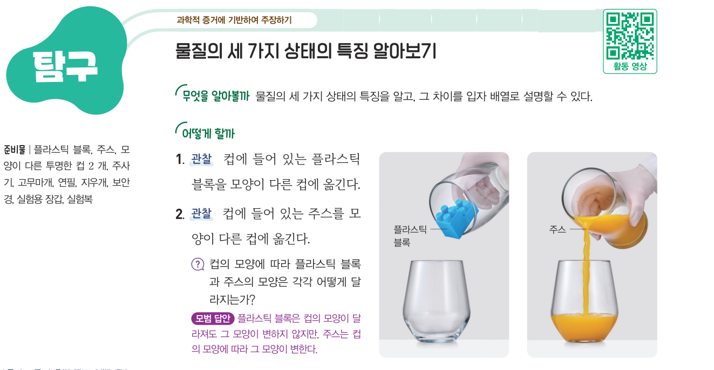
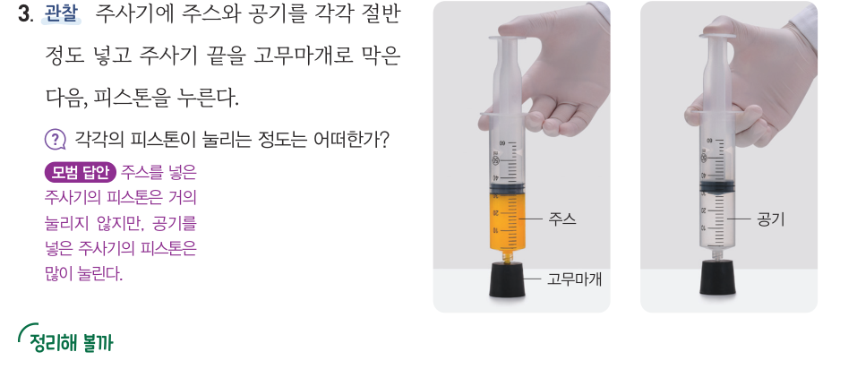
[핵심 이론] 로슨의 순환학습은 탐색 단계의 질문 성격으로 구분한다. 서술적 순환학습은 ‘무엇이/어떤 특징이’를 묻고 관찰·기술로 규칙성을 찾는다(가설 없음). 경험-귀추적 순환학습은 ‘왜’라는 인과적 의문에 대해 학생이 이전 경험에서 설명을 빌려 와 가설을 생성하는 귀추가 핵심이며, 가설-연역적 순환학습은 여기에 더해 대안 가설을 학생이 직접 설계한 실험으로 검증한다.
[교육과정 근거] [9과04-02] 성취기준 해설은 입자 모형을 ‘입자 사이의 상대적 거리, 배열의 불규칙한 정도, 운동성’을 비교하는 수준으로 한정한다. 따라서 상태가 변해도 입자 자체의 크기·모양은 같게 그려야 한다.
[채점 포인트] ㉠·㉢은 모형 이름만 쓰면 감점 — 반드시 ‘서술적 질문/인과적 질문’, ‘가설 생성 여부’를 근거로 대비시켜야 한다. ㉣ 수정은 ‘입자 크기를 같게’라는 결론까지 써야 만점.
[출제 포인트] 로슨 3유형(2025 화학 B3 등 반복 출제) + [9과04-02] 성취기준 해설 빈칸(2026 지구 A6·A7형). 해설 문구를 근거로 오개념(입자 크기 변화) 수정.
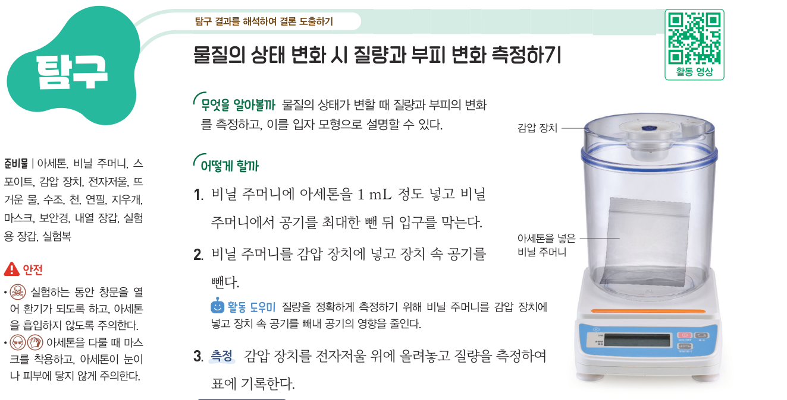
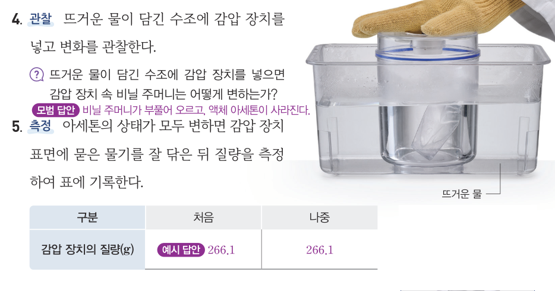
[핵심 이론] 상태 변화에서 질량 보존은 ‘입자의 종류와 수가 변하지 않음’, 부피 변화는 ‘입자 사이 거리(배열) 변화’로 설명한다. 열린 비닐 주머니로 측정하면 부피가 커진 만큼 부력이 커져 질량이 작게 측정되는 계통 오차가 생긴다.
[교육과정 근거] [9과04-03] 해설·적용 시 고려 사항은 상태 변화 시 질량·부피 변화를 입자 모형으로 설명하게 하고, 기체의 부피 증가에 따른 부력 영향을 고려하도록 한다. 감압 장치는 부피가 고정되어 부력 차이를 없애는 장치이다.
[채점 포인트] 오류 수정은 ‘무엇을 → 어떻게 → 왜’ 세 요소가 모두 있어야 한다. 측정값 변화는 ‘크게/작게’ 방향과 원인(물기, 부력)을 함께 서술. 입자 모형 설명에서 ‘입자 크기가 커진다’는 표현은 오개념으로 감점.
[출제 포인트] [9과04-03] 해설·고려 사항(부력) 원문 + 교과서 탐구 과정·활동 도우미(아세톤 1 mL, 공기 제거, 물기 제거). 2026 화학 A5와 동일한 ‘오류 2가지 수정 + 미수행 시 측정값 변화’ 형식.
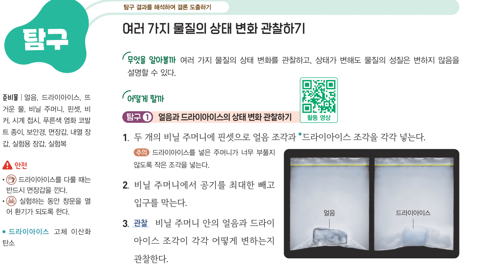
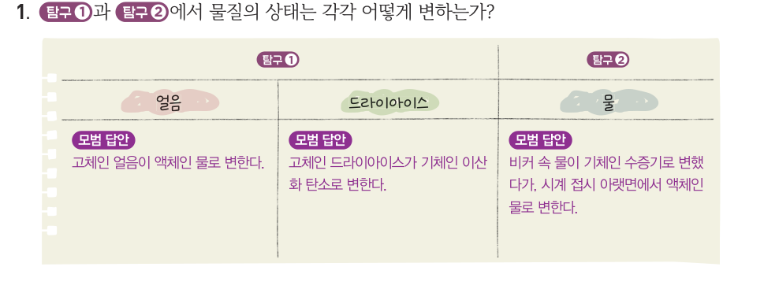
[핵심 이론] 비고츠키: 실제적 발달 수준(혼자 해결) – 근접발달영역 – 잠재적 발달 수준(도움을 받아 해결). 비계는 ZPD 안에서 제공하고 학습자의 능력이 커지면 점차 제거(fading)한다.
[교육과정 근거] [9과04-03] 해설은 융해·응고·기화·액화·승화를 구분하도록 한다. 드라이아이스의 하얀 김은 승화한 이산화 탄소가 아니라 차가워진 공기 속 수증기가 액화한 작은 물방울이라는 점이 핵심 오개념 교정 포인트이다.
[채점 포인트] 두 발달 수준은 이 문항의 학생 상황(눈사람·하얀 김)에 맞춰 구체적으로 서술해야 한다. ‘비계’라는 용어와 함께 ‘점진적 도움 감소’를 언급해야 만점. ㉢은 ‘액화’와 ‘열에너지 방출’ 두 요소.
[출제 포인트] [9과04-03] 해설의 ‘융해, 응고, 기화, 액화, 승화를 구분’ + 학생 오개념 상황(하얀 김=기체 CO₂). 실제적/잠재적 발달 수준(2026 물리 B3), 비계(2026 화학 B3).
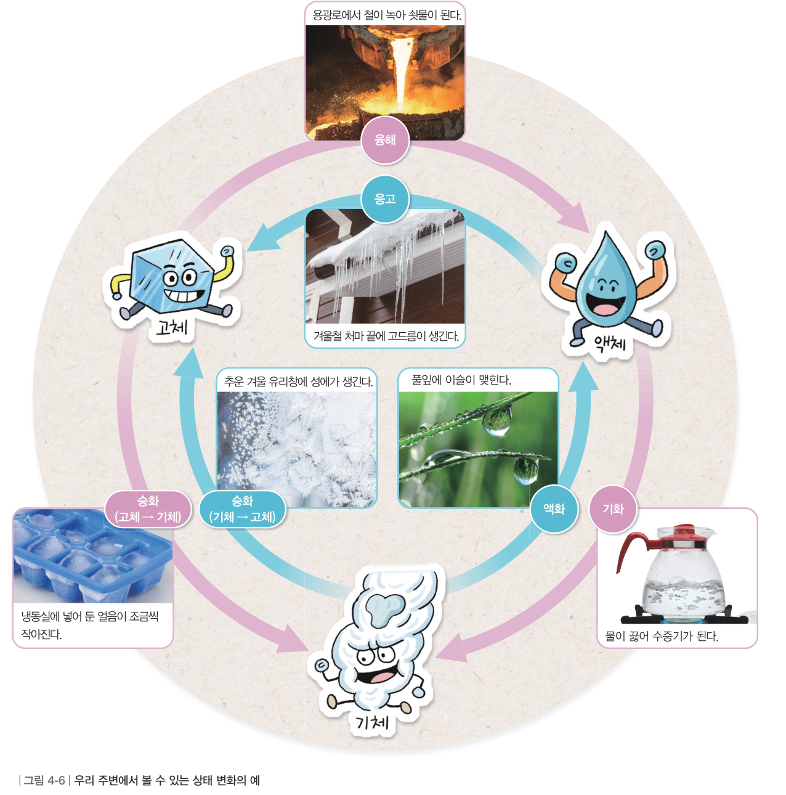
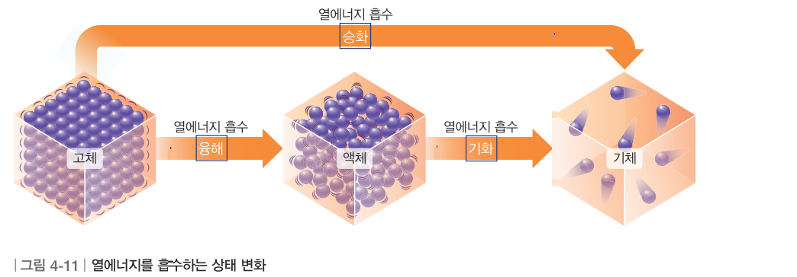
[핵심 이론] 오수벨: 설명 선행조직자(새 개념을 포섭할 상위 틀 제공)와 비교 선행조직자(유사 개념과의 공통점·차이점으로 변별력 향상)를 구분한다. 하위적 학습(새 개념이 기존 상위 개념 아래로), 상위적 학습(기존 하위 개념들을 묶는 새 상위 개념), 병위적 학습(같은 수준).
[교육과정 근거] [9과04-04] 성취기준은 상태 변화와 열에너지 출입을 관련지어 설명하고, 이를 일상생활에 활용하여 과학의 유용성을 인식하게 한다. 과일 창고에 물을 두는 사례는 응고열 방출의 활용이다.
[채점 포인트] 융해(고체→액체)와 용해(용질이 용매에 녹음)의 구분을 비교 선행조직자의 ‘상호 변별’ 기능과 연결할 것. ㉠은 ‘여러 하위 개념을 포괄’이라는 근거가 반드시 필요.
[출제 포인트] 2026년 오수벨 3과목 동시 출제. [9과04-04] 성취기준 원문 빈칸(과학의 유용성 – 가치·태도 ‘과학 유용성’과 연결).
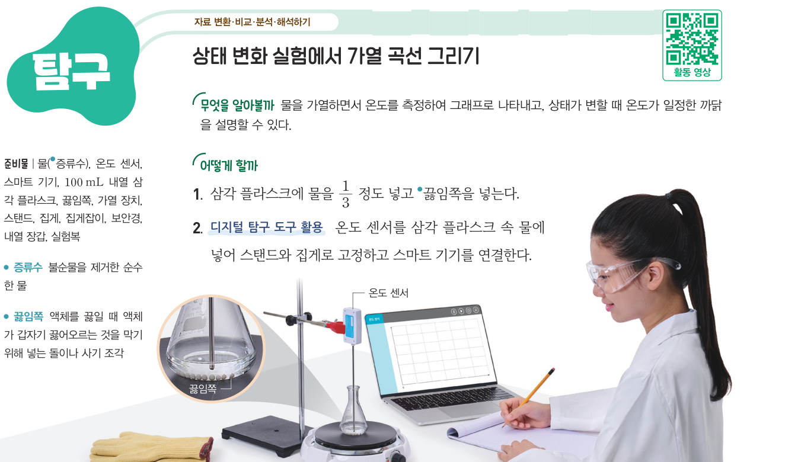
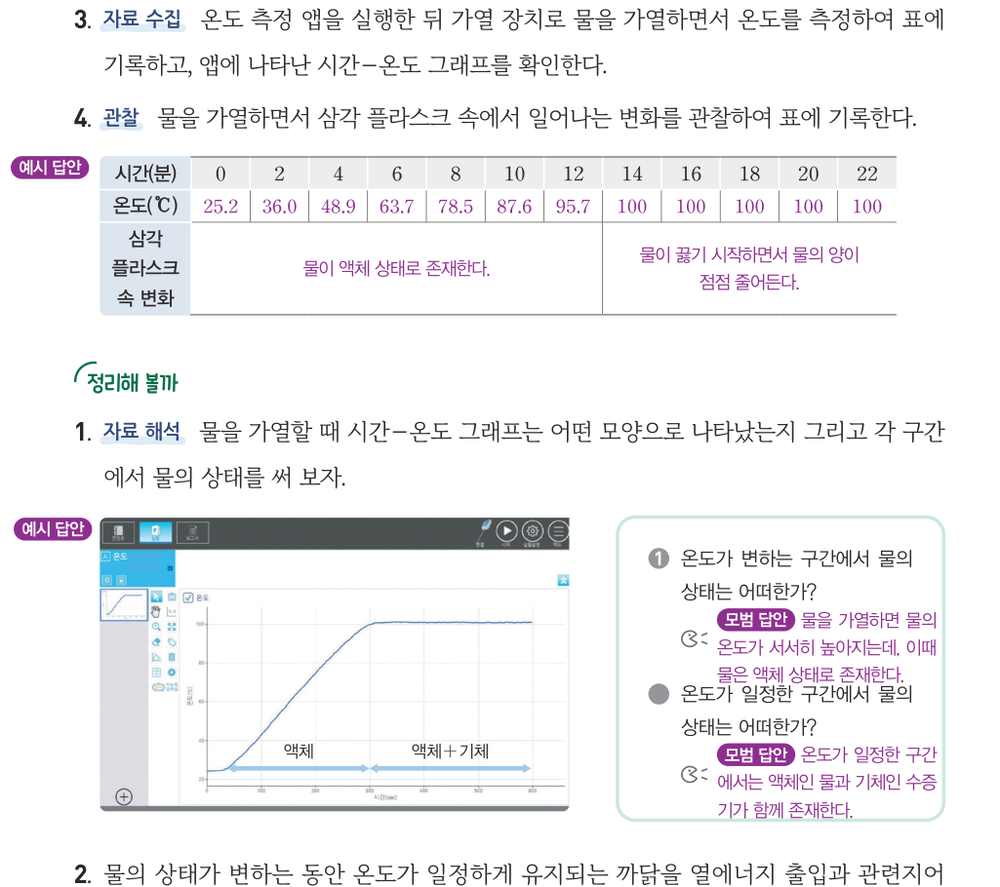
[핵심 이론] 디지털 탐구 도구(온도 센서·스마트 기기)를 쓸 때도 센서 위치·가열 방식 같은 측정 조건 통제가 자료의 타당도를 결정한다. 끓임쪽은 돌비(갑작스러운 끓어오름)를 막는다.
[교육과정 근거] [9과04-04] 고려 사항에 따라 녹는점·끓는점·어는점의 정확한 개념은 ‘물질의 특성’에서 다루므로, 이 차시는 ‘상태 변화가 일어나는 온도’와 열에너지 출입에 주안점을 둔다(교육과정 수준을 벗어난 지도 판단형).
[채점 포인트] ‘센 불이면 끓는 온도가 높아진다’는 학생 오개념 교정에 ‘시간만 단축’ 명시. ㉣이 부적절한 이유는 교육과정 원문 근거(학년군·단원 위계)로 서술해야 하며, ‘어렵다’ 수준의 답은 감점.
[출제 포인트] [9과04-04] 해설과 ‘녹는점·끓는점·어는점은 물질의 특성에서’ 고려 사항 원문을 근거로 한 ‘지도 범위 판단’형(2026 화학 A7, 2026 물리 A7). 교과서 탐구(온도 센서·끓임쪽)와 학생 오개념(센 불) 상황 결합.
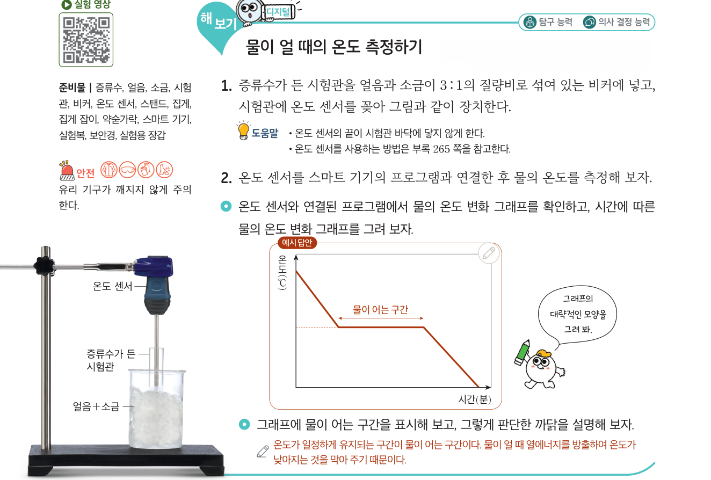
[핵심 이론] POE(예측–관찰–설명)에서 예측과 관찰의 불일치로 인지 갈등을 유발한다. 하슈웨 모형: C1(선개념)–C2(과학 개념)–R1(C1으로 설명되는 현상)–R2(C1으로 설명되지 않는 현상). 갈등 1은 C1과 R2, 갈등 2는 C1과 C2 사이의 갈등이다.
[교육과정 근거] 교육과정 탐구 활동 ‘가열 곡선 또는 냉각 곡선 그리기’. 응고하는 동안 온도가 일정한 것은 응고 시 방출하는 열에너지가 냉각으로 잃는 열을 보충하기 때문이다.
[채점 포인트] C1과 R2를 학생 발화·그래프 구간(㉡)에서 정확히 짚어야 하며 ‘갈등 1’ 유형까지 써야 한다. 시험관 굵기 문제는 ‘열 전달 불균일 → 측정 지점 온도 변화’ 인과와 개선 방법을 모두 서술.
[출제 포인트] 교육과정 탐구 활동 ‘가열 곡선 또는 냉각 곡선 그리기’ + 학생 선개념(얼음은 항상 0 ℃)을 POE·하슈웨 구조로(2025 화학 A7, 2024 생물 B3) + 탐구 활동 시 유의점(시험관 굵기)을 실험 결과 해석·개선형으로.
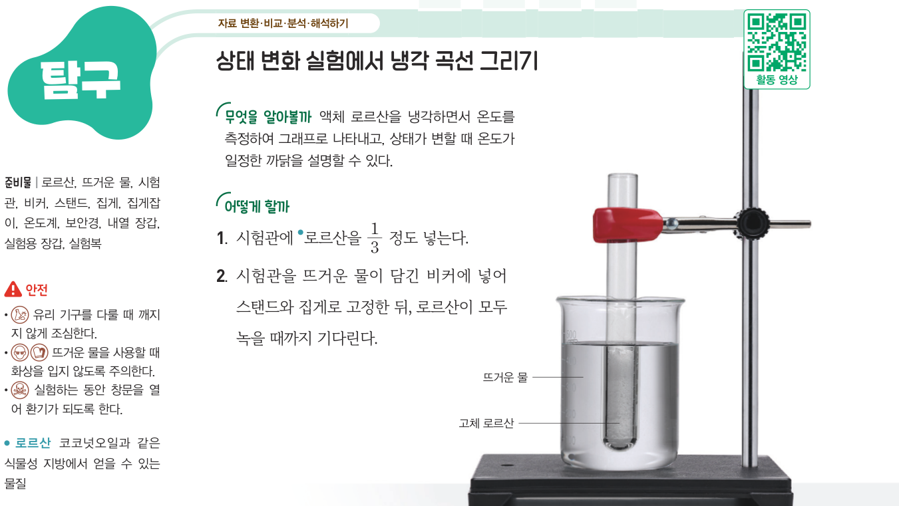
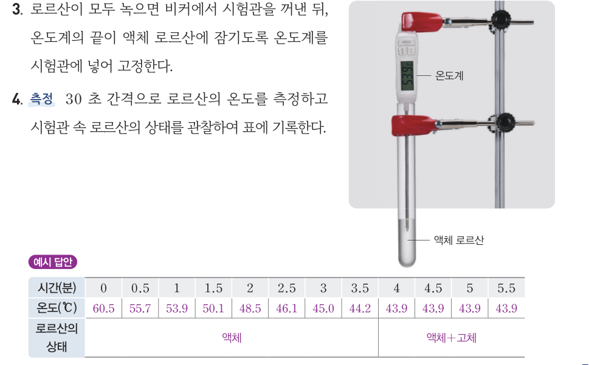
[핵심 이론] 분석적 채점은 평가 요소별 기준·점수를 따로 두어 진단·피드백에 유리하고, 총체적 채점은 전체 인상으로 하나의 점수를 준다. 효과적 피드백은 오류 지점을 구체적으로 짚고 올바른 개념으로 재구성하도록 돕는다.
[교육과정 근거] [9과04-04] 해설(상태 변화와 열에너지 출입)과 교수·학습 및 평가의 과정·기능 5범주(문제 인식 및 가설 설정 / 탐구 설계 및 수행 / 자료 수집·분석 및 해석 / 결론 도출 및 일반화 / 의사소통과 협업).
[채점 포인트] 피드백은 ‘냉각=응고’, ‘방출’, ‘온도 일정 이유’ 세 요소를 포함해야 한다. 평가 준거는 관찰 가능한 행동(눈높이, 측정 간격, 온도계 위치)으로 진술해야 한다.
[출제 포인트] 2026 지구 A7과 같은 ‘[교수·학습 및 평가 운영 계획 수립] – 성취기준 해설 빈칸 – 채점 기준 – 피드백’ 구조. 교육과정 평가 방법 (다)의 과정·기능 5범주 용어 확인.
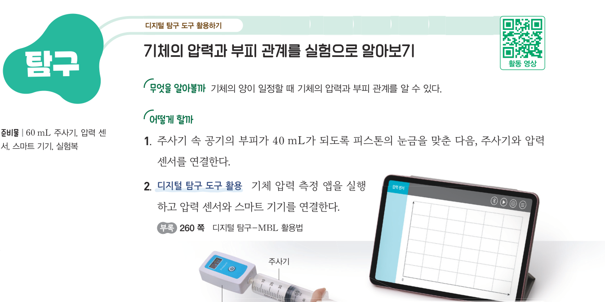
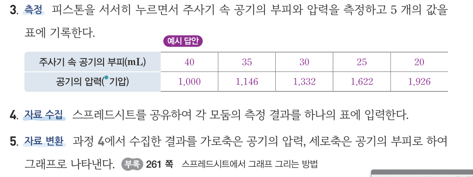
[핵심 이론] 보일 법칙의 정성적 이해: 일정 온도에서 압력이 커지면 부피가 작아진다. 입자 수·크기는 일정하고 입자 사이 거리만 줄어 단위 면적당 충돌 횟수가 늘어난다.
[교육과정 근거] (6) 기체의 성질 적용 시 고려 사항: 정량적 계산은 고등학교 ‘물질과 에너지’에서 다루며, 공유 플랫폼 등을 활용해 디지털 소양을 기르게 한다. [9과06-01] 해설은 압력을 ‘일정한 면적에 입자의 충돌로 가해지는 힘의 수준’에서 다룬다.
[채점 포인트] ‘PV=k 계산 반복’이 부적절한 이유를 교육과정 원문으로 제시하고 정성적 대안을 함께 서술. 입자 크기가 작아지는 그림(나)는 오개념 — ‘크기·개수 불변, 거리 감소’를 명시해야 만점.
[출제 포인트] (6) 기체의 성질 고려 사항 원문(정량 계산은 고등 ‘물질과 에너지’, 공유 플랫폼, 디지털 소양) 빈칸 + 내용 체계 과정·기능 진술 + [9과06-01] 해설(입자 충돌 수준). 2025 화학 A5(디지털 소양)·2022 화학 B3 계열.
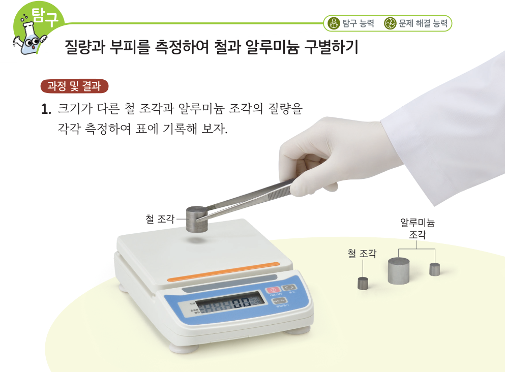
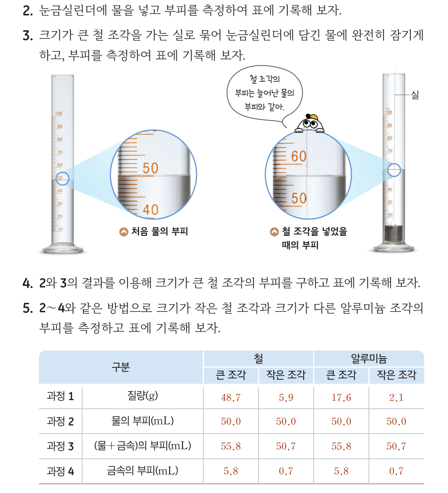
[핵심 이론] 포스너 개념 변화 조건: 불만족 → 이해 가능성 → 그럴듯함 → 유용성(생산성). 변칙 사례(무거운 얼음덩어리가 뜨고 가벼운 동전이 가라앉음)는 ‘무거우면 가라앉는다’는 선개념에 불만족을 일으킨다.
[교육과정 근거] [9과08-01] 해설: 질량·부피는 물질의 양에 따라 달라지지만 밀도·녹는점·끓는점 등은 특정한 조건에서 양과 관계없이 일정한 물질의 특성이다.
[채점 포인트] ㉠ 근거는 반드시 이 문항의 변칙 사례와 연결. ㉣은 ‘특정한 조건(온도·압력)’의 의미와 기체 밀도의 큰 변화를 언급해야 한다.
[출제 포인트] [9과08-01] 성취기준 해설 원문 빈칸(물질의 양) ‘특정한 조건에서’ 의미 + 변칙 사례 제시를 포스너 조건에 대응.
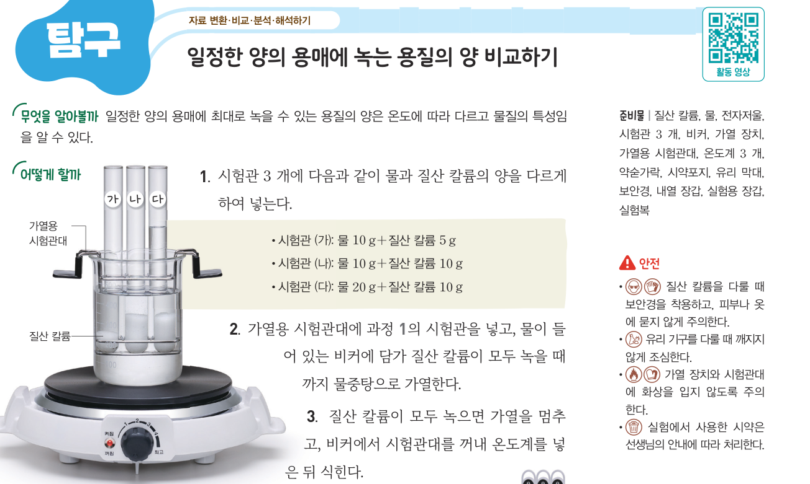
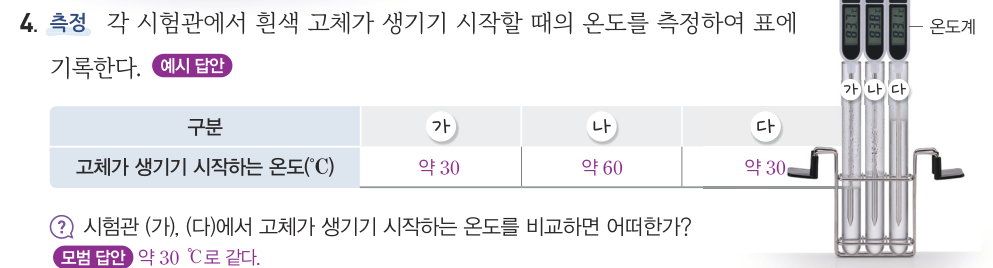
[핵심 이론] 피아제 형식적 조작기의 도식 중 비례 논리: 용매와 용질 비율이 같으면 같은 온도에서 포화된다. 석출 시작 온도 측정은 최대 용해량을 간접 측정하는 방법이다.
[교육과정 근거] (8) 물질의 특성 고려 사항: 혼합물의 분리는 ‘방법과 원리를 이해하는 수준’에서 다룬다. 석출량 계산 반복이나 용어 암기는 이 수준을 벗어난다.
[채점 포인트] ‘포화 용액’ 용어와 ‘그 온도의 최대 용해량’ 의미를 함께. 비례 추론은 실제 수치(10 : 5 = 20 : 10)를 사용해 보여야 한다.
[출제 포인트] (8) 물질의 특성 고려 사항 원문 ‘방법과 원리를 이해하는 수준’ 빈칸 → 지도 범위 판단. 간접 측정, 피아제 비례 논리 결합.
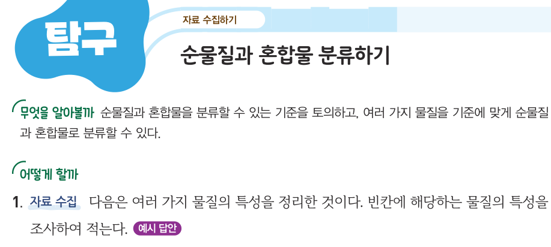
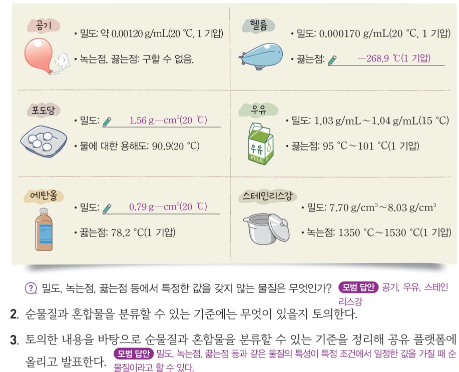
[핵심 이론] 귀추: 놀라운 현상 q를 관찰 → ‘만약 p라면 q가 설명된다’ → p를 잠정적 가설로 채택. 연역(일반 원리→개별 사례 예측), 귀납(여러 사례→일반화)과 구별한다.
[교육과정 근거] [9과08-02] 성취기준은 물질의 특성을 근거로 순물질과 혼합물을 구별하게 하고, 고려 사항은 구별 기준에 대해 토의하게 한다.
[채점 포인트] 학생 B의 발화가 ‘p라면 q 설명’ 형식임을 짚어야 한다. 식염수 오개념 교정은 ‘겉보기 균일 ≠ 순물질’과 ‘끓는 동안 온도 변화’ 증거를 함께 제시.
[출제 포인트] [9과08-02] 성취기준과 ‘구별하는 기준에 대해 토의’ 고려 사항 원문 + 학생 토의 속 귀추(‘p라면 q 설명’ 형식, 2026 지구 A6·2023 화학 A5) → 출제 가능성 매우 높음.
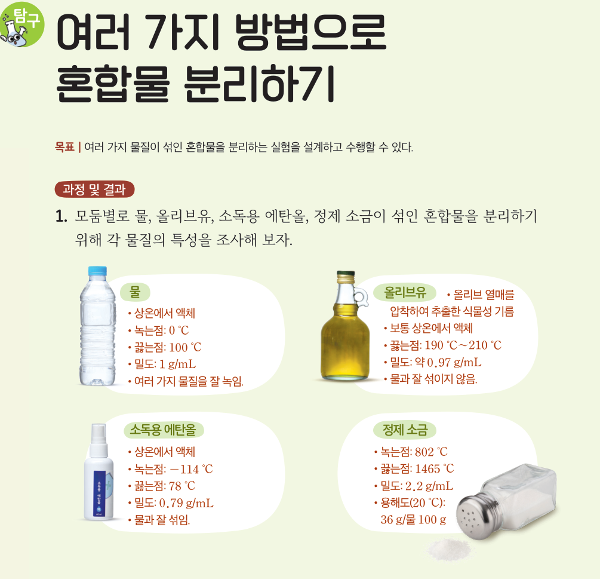
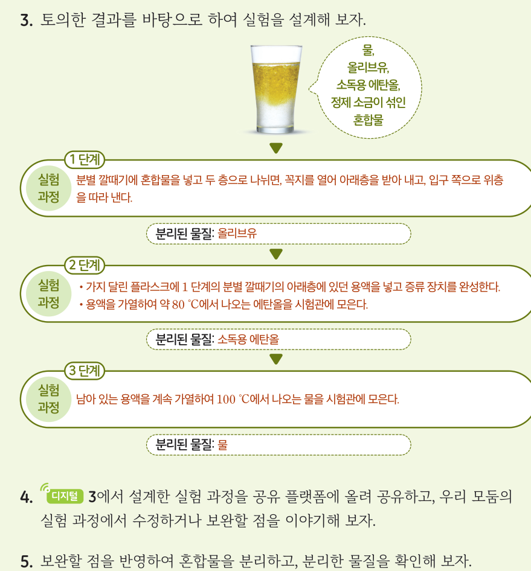
[핵심 이론] 헤론의 탐구 수준: 0수준(문제·방법·답 모두 제시), 1수준(문제·방법 제시), 2수준(문제만 제시), 3수준(모두 개방). 협동 학습의 핵심 요소는 긍정적 상호 의존성과 개별적 책무성이다.
[교육과정 근거] 교육과정 탐구 활동 ‘혼합물 분리 실험을 설계하고 수행하기’, 고려 사항(조사 자료를 근거로 실험 계획 공유), 교수·학습 방법(학생 중심 탐구와 협업).
[채점 포인트] 2수준 근거는 ‘문제는 교사, 방법·답은 학생’. 협업 장치는 무임승차 방지와 두 요소(상호 의존성·책무성)를 모두 연결. 맛보기는 안전 수칙 위반으로 대안 확인 방법을 제시해야 한다.
[출제 포인트] 교육과정 탐구 활동 ‘혼합물 분리 실험을 설계하고 수행하기’ + 고려 사항(조사 자료 근거·실험 계획 공유) + 교수·학습 방법(학생 중심 탐구·협업) 원문. 헤론 수준(2023 화학 A7), 협동 학습(2024 화학 A5).
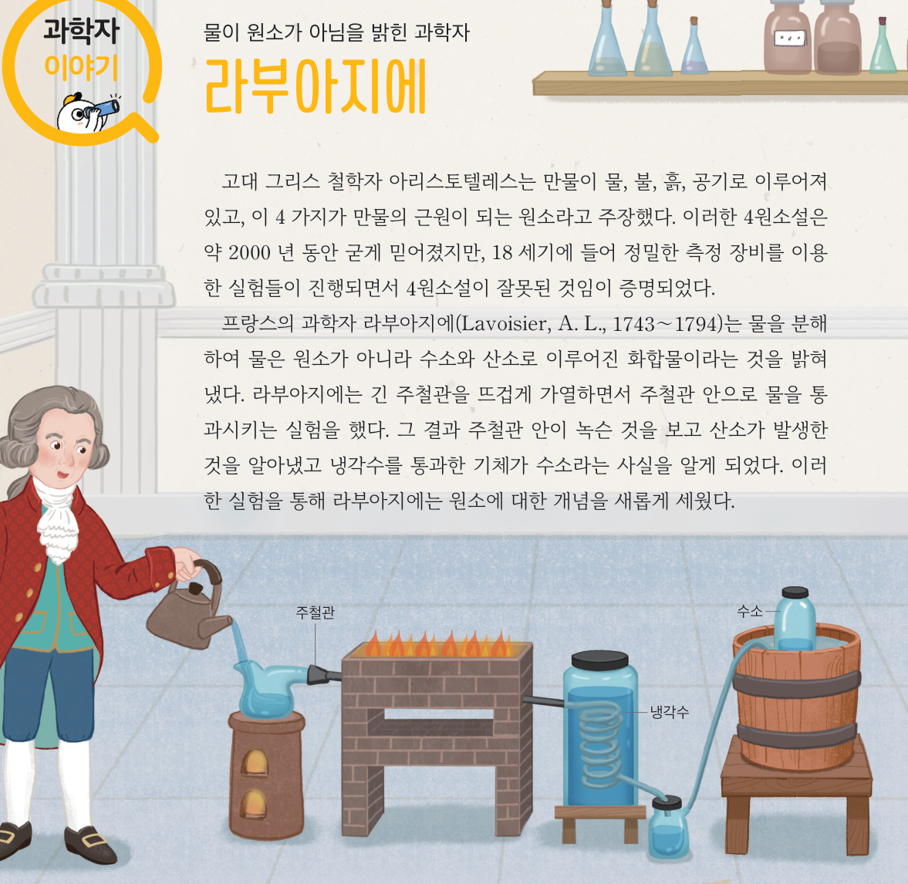
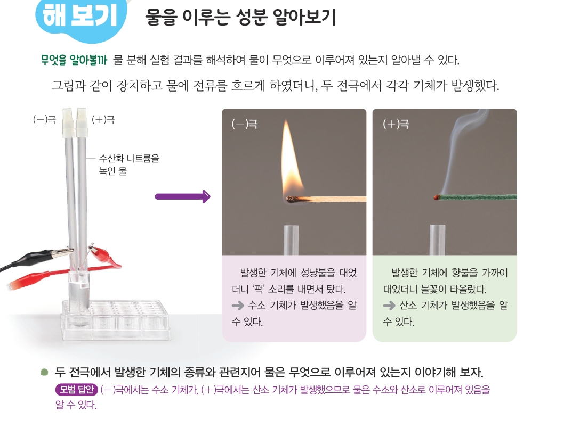
[핵심 이론] 쿤: 정상 과학 → 변칙 사례 누적 → 위기 → 과학 혁명(패러다임 전환) → 새로운 정상 과학. 라부아지에의 물 분해·합성 실험은 4원소설 패러다임을 무너뜨린 대표 사례이다.
[교육과정 근거] 내용 체계 과정·기능 ‘과학적 증거에 기반하여 주장하기’, 교수·학습 및 평가에서 제시한 과학의 본성(잠정성, 과학·기술·사회의 상호 관련성)과 가치·태도(호기심).
[채점 포인트] 정상 과학/과학 혁명 대응을 시기별로 구분. 과학의 본성은 자료 속 근거(2000년간 4원소설, 정밀 측정 장비)와 짝지어 써야 한다.
[출제 포인트] 2026 화학 A6과 같은 ‘교수·학습 및 평가’의 과학의 본성 목록에서 고르는 형식 + 내용 체계 과정·기능 진술(과학적 증거에 기반하여 주장하기). 화교론 과학사 단골(2014·2019 쿤).
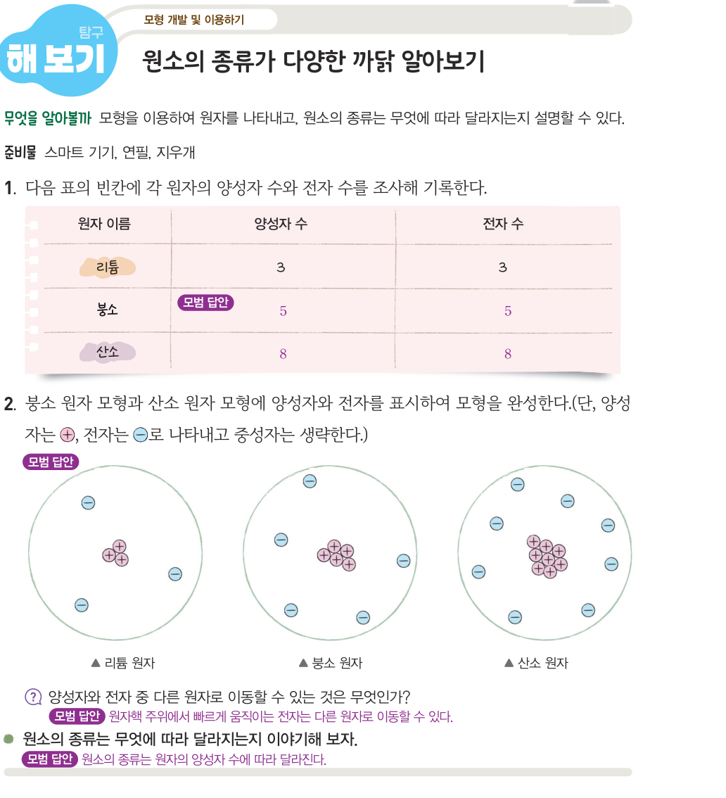
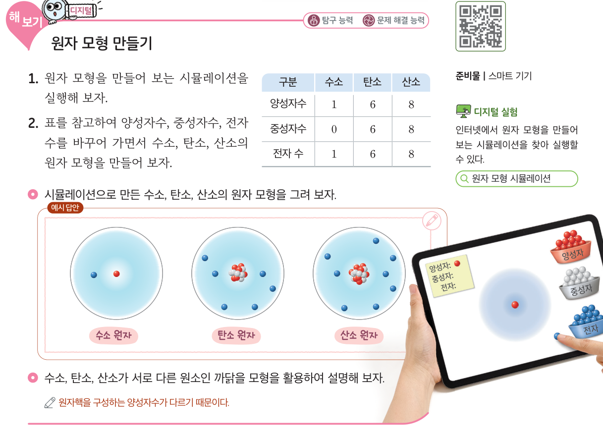
[핵심 이론] 비유 학습(글린의 TWA 등)은 대응 속성과 비대응 속성을 함께 다뤄야 비유로 인한 오개념을 막는다. 모형은 실제를 단순화한 표상이다.
[교육과정 근거] [9과11-02] 해설: 질량수·동위 원소는 다루지 않는다. [9과11-04] 해설: 이온은 전자를 잃거나 얻는 수준에서 다룬다. 교수·학습 방법: 모형과 실제 자연 현상 사이의 차이를 이해하게 한다.
[채점 포인트] 잘못된 계획 2개는 각각 해당 성취기준 해설 원문을 근거로 제시해야 한다(‘어려워서’는 감점). 비유는 대응·비대응을 각각 하나 이상.
[출제 포인트] 2026 화학 A7의 직접 변형. [9과11-02]·[9과11-04] 성취기준 해설 원문(질량수·동위 원소 제외, 이온 형성 수준)과 교수·학습 방법의 모형 유의 사항을 근거로 판단.
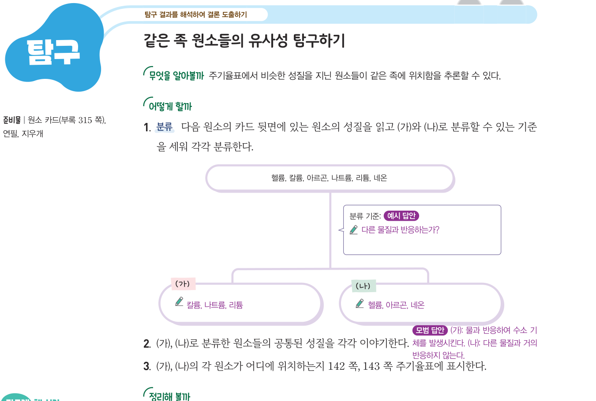
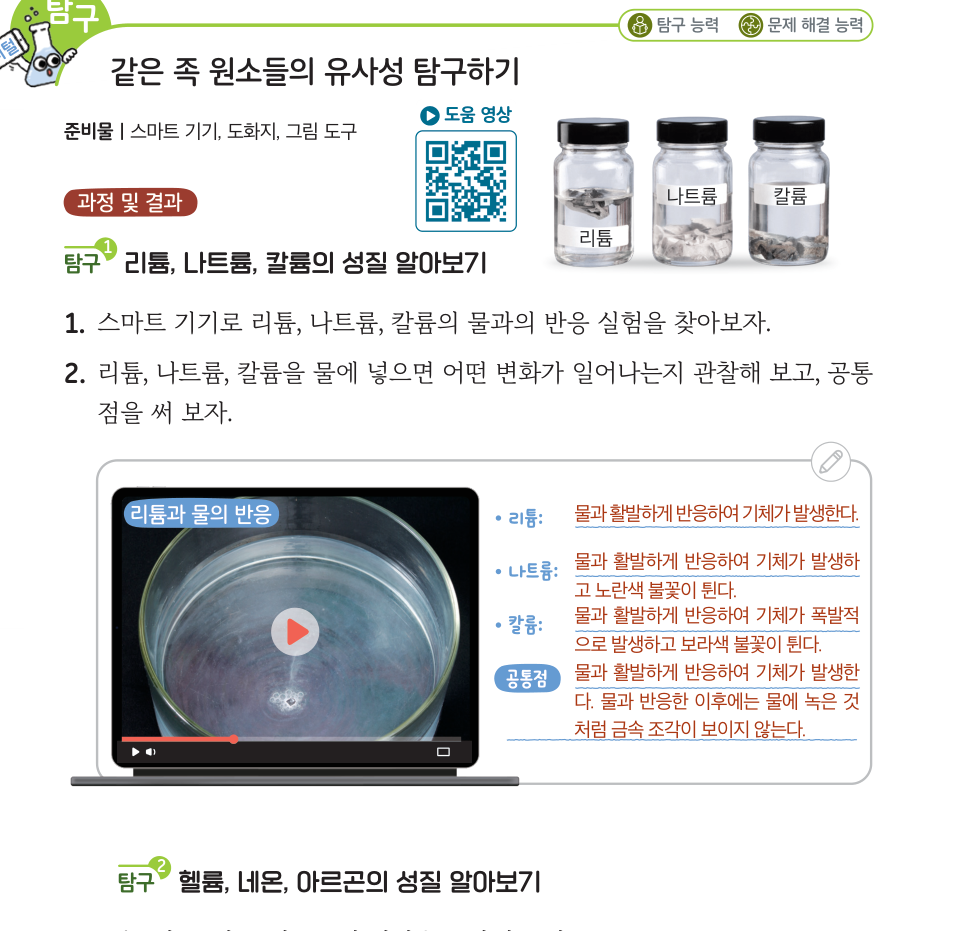
[핵심 이론] 연역적 추론: 일반화된 규칙(같은 족 원소는 성질이 비슷함)을 개별 사례에 적용해 예측한다. 위험한 반응은 영상·시뮬레이션으로 대체하는 것이 안전 원칙이다.
[교육과정 근거] [9과11-03] 해설: 동족 원소의 유사성은 1족 원소의 물과의 반응성, 18족 원소의 안정성 등 비슷한 성질을 지닌 원소들이 있음을 탐구를 통해 추론하고, 각 반응에 관한 구체적 설명이나 원리 및 원소의 주기성은 다루지 않는다.
[채점 포인트] A·C 두 계획을 모두 찾고, 각각 ‘다루지 않는다’는 해설 문구로 근거를 대야 한다. ㉡은 안전상의 이유를 구체적으로(화재·폭발 위험).
[출제 포인트] 2022 개정에서 중학교에 새로 들어온 주기율표. [9과11-03] 성취기준 해설 원문 빈칸(안정성) + ‘다루지 않는다’ 범위로 잘못된 계획 찾기(2026 화학 A7형). 교육과정 탐구 활동명 그대로 사용.
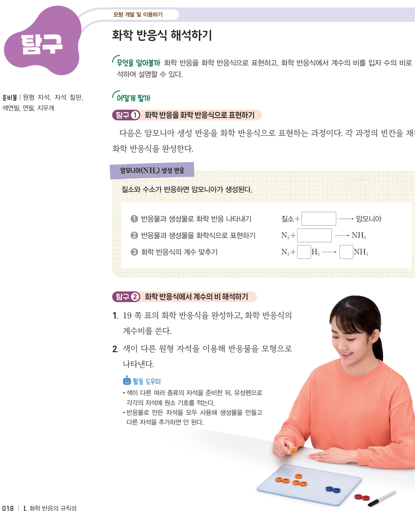
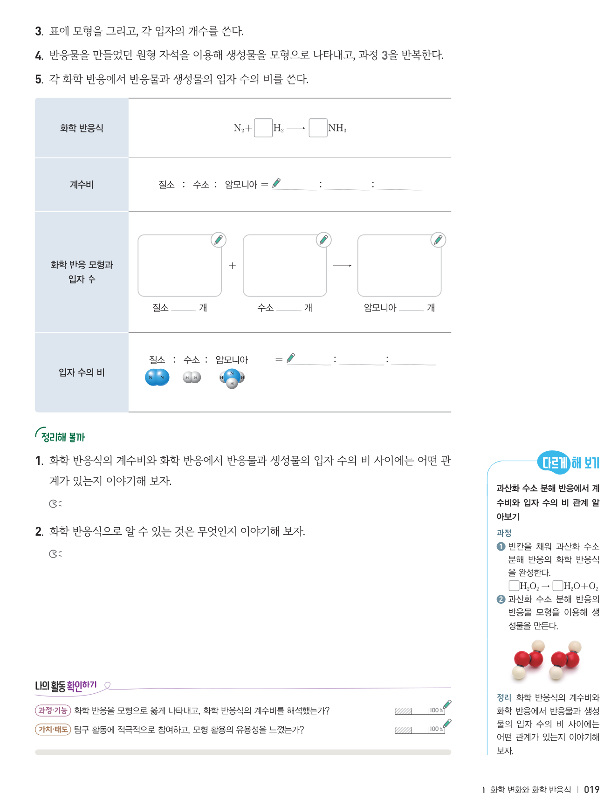
[핵심 이론] 브루너는 지식을 표현하는 방식을 작동적 표상(행동·조작), 영상적 표상(그림·이미지), 상징적 표상(언어·기호)으로 나누고, 학습자의 발달 수준에 맞게 이 순서로 제시하면 어떤 내용도 지적으로 정직한 형태로 가르칠 수 있다고 보았다. 화학 반응식은 대표적인 상징적 표상이다.
[교육과정 근거] [9과16-02]는 화학 반응식에서 계수의 비를 ‘입자 수의 비’로 해석하도록 한다. 내용 체계 과정·기능의 ‘모형을 이용하여 현상을 설명하거나 예측하기’가 이 탐구의 핵심 기능이다.
[채점 포인트] 표상 양식 3개를 순서대로 모두 써야 하고, 구성 이유는 ‘구체 → 추상’ 발달 순서로 설명해야 한다. 학생 A는 ‘아래 첨자는 바꾸지 않는다’, 학생 B는 ‘계수비 ≠ 질량비’를 명시. ㉡은 이온 결합 물질이 독립된 입자 단위로 존재하지 않는다는 점과 분자 예시 대안을 함께 써야 만점.
[출제 포인트] [9과16-02] 성취기준 원문과 내용 체계 과정·기능(모형) 빈칸. 브루너 표상 양식(2022 화학 B3 영상적, 2023 화학 A6 작동적)과 화학 반응식의 대표 오개념(첨자 변경, 계수비 = 질량비), 이온 결합 물질을 예시로 쓸 때의 문제(교과서 ‘오개념 바로잡기’)를 결합.
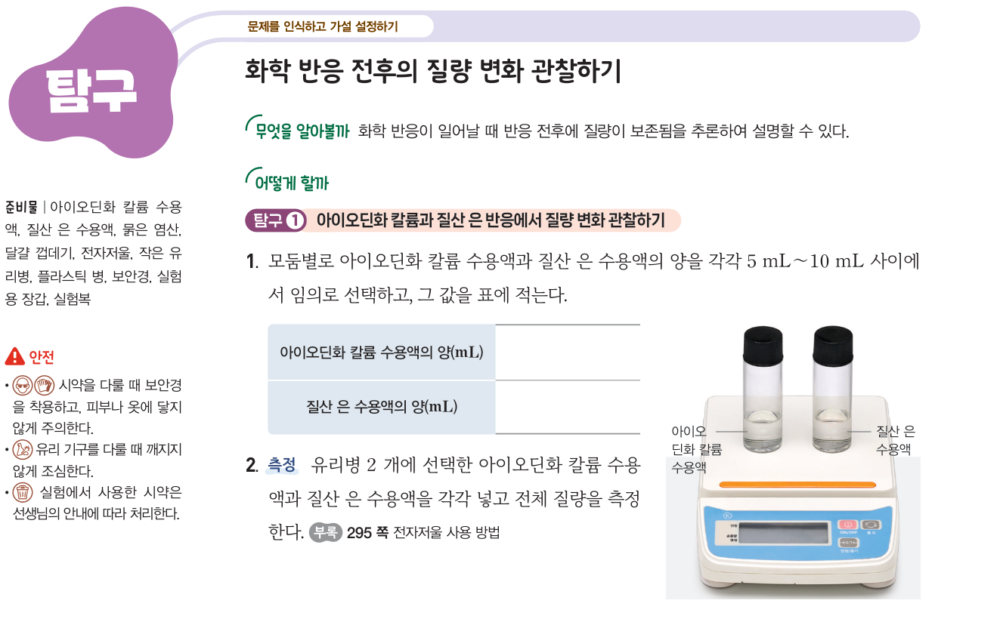
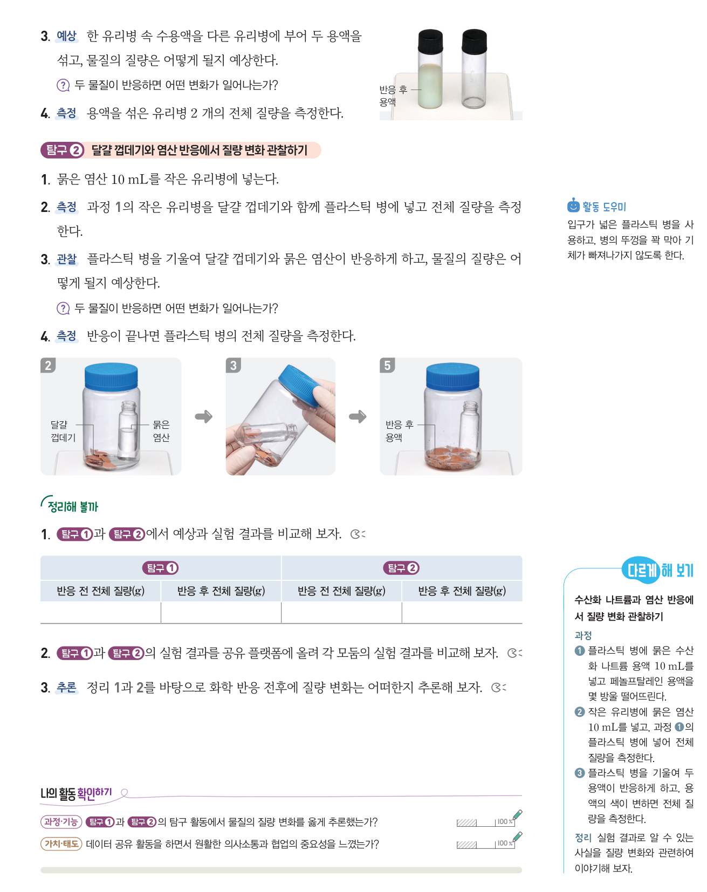
[핵심 이론] 툴민 논증 모형: 주장(claim) – 자료(data) – 보장(warrant, 자료가 주장을 지지하는 이유) – 뒷받침(backing, 보장을 지지하는 근거) – 한정어(qualifier) – 반박(rebuttal, 주장이 성립하지 않는 조건). 과학 글쓰기와 토론에서 학생 논증의 수준을 분석하는 틀로 쓰인다.
[교육과정 근거] [9과16-03] 해설은 ‘원자의 배열만 변하고, 원자의 종류와 수는 변하지 않음’을 강조하게 하고, 고려 사항은 기체 질량 측정 시 부력 영향을 유의하게 한다.
[채점 포인트] 보장과 반박을 혼동하지 말 것(보장 = 연결 원리, 반박 = 예외 조건). 부력 설명은 ‘용기 부피 증가 → 밀어낸 공기 증가 → 부력 증가 → 질량 작게’의 인과 사슬을 모두 써야 한다. 강철 솜은 ‘결합한 산소’와 ‘원자의 종류·수 불변’을 함께 제시.
[출제 포인트] [9과16-03] 성취기준 해설 원문 빈칸(배열)과 고려 사항(부력) 원문 근거. 질량 보존(2022 화학 A7, 2025 화학 A7) + 툴민 논증 요소(2026 지구 A5 ‘논거’) + 교과서 ‘과학 역량 기르기’의 연소 오개념을 결합.
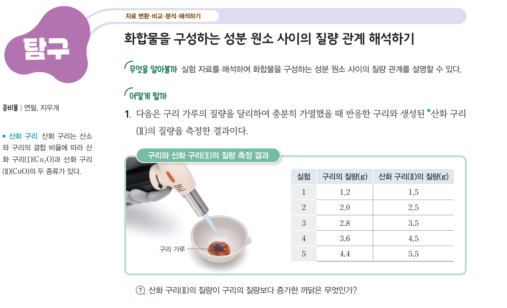
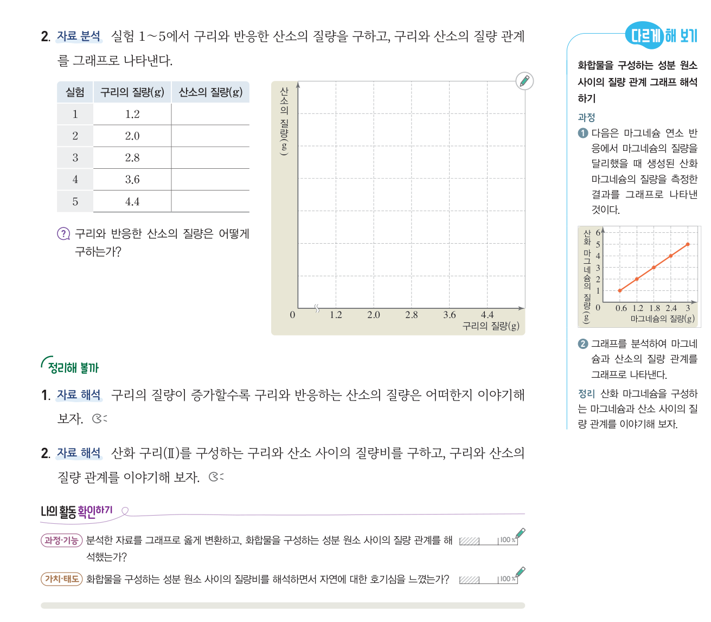
[핵심 이론] 귀납적 추론은 개별 사례에서 일반 법칙을 이끌어 내지만, 관찰 사례가 아무리 많아도 결론의 참을 보장하지 못한다(귀납의 한계). 측정 자료의 이상값은 실험 과정의 오차 원인을 찾는 단서이며, 임의로 고치거나 버리는 것은 연구 윤리 위반이다.
[교육과정 근거] [9과16-04] 고려 사항: 일정 성분비 법칙은 원소를 화학식으로 일정하게 표현할 수 있는 근거가 된다. 고려 사항은 여러 모둠의 데이터를 공유 플랫폼 등으로 공유하게 하며, 내용 체계 가치·태도에 ‘과학 활동의 윤리성’이 포함된다.
[채점 포인트] 산소 질량 0.6 g 계산과 원인(가열 부족·미반응 구리)을 함께. ㉡은 ‘자료 조작’이라는 문제 규정과 올바른 처리(기록 유지·원인 분석·재실험)를 모두 써야 한다. ㉠ 화학식은 CuO의 개수비 1 : 1과 연결해 설명.
[출제 포인트] [9과16-04] 고려 사항 원문 빈칸(화학식)과 내용 체계 가치·태도 빈칸(과학 활동의 윤리성). 공유 플랫폼 자료 해석, 측정 오차의 원인(2025 화학 B5), 귀납의 한계(2025 화학 A6, 2022 화학 A7).
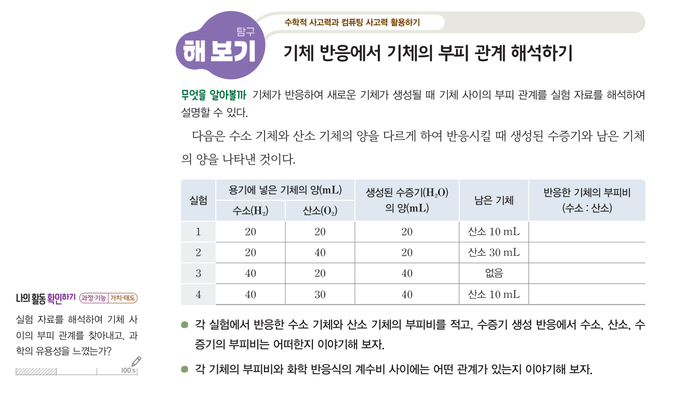
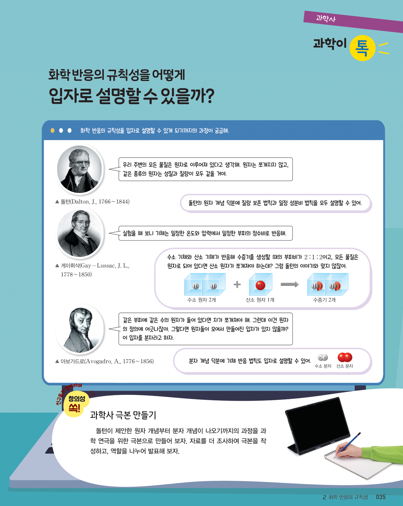
[핵심 이론] 라카토슈의 과학적 연구 프로그램: 견고한 핵(반증으로부터 보호되는 핵심 가정) + 보호대(보조 가설). 부정적 발견법은 핵을 공격하지 말라는 규칙, 긍정적 발견법은 보호대를 수정·발전시키는 지침이다. 보호대 수정이 새로운 사실을 예측하면 진보적, 변칙 사례를 사후에 땜질만 하면 퇴행적 연구 프로그램이다.
[교육과정 근거] [9과16-05]는 실험 자료를 해석하여 기체 부피비가 일정함을 설명하게 한다. 고려 사항은 세 법칙의 추상성이 높으므로 모형·소프트웨어·앱으로 시각적 접근을 하도록 한다.
[채점 포인트] 자료 해석에서는 ‘넣어 준 양’이 아니라 ‘반응한 양’을 써야 한다(남은 기체 차감). 라카토슈 답안은 견고한 핵 진술, 분자 가설 = 보호대 수정(보조 가설), 진보적 근거(새로운 예측)의 세 요소가 모두 필요.
[출제 포인트] [9과16-05] 고려 사항 원문 빈칸(추상성). 교과서 해 보기 자료(남은 기체 고려) + 과학이 톡의 돌턴–게이뤼삭–아보가드로 과학사를 라카토슈 연구 프로그램(2022 화학 A5, 2025 지구 A6, 2026 생물 A6)으로 해석.
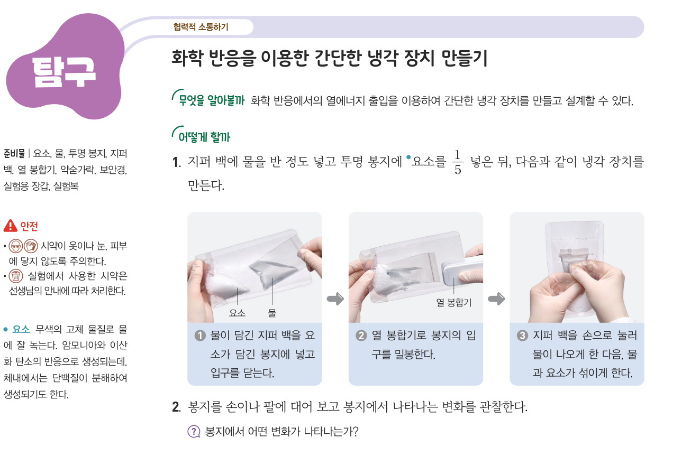
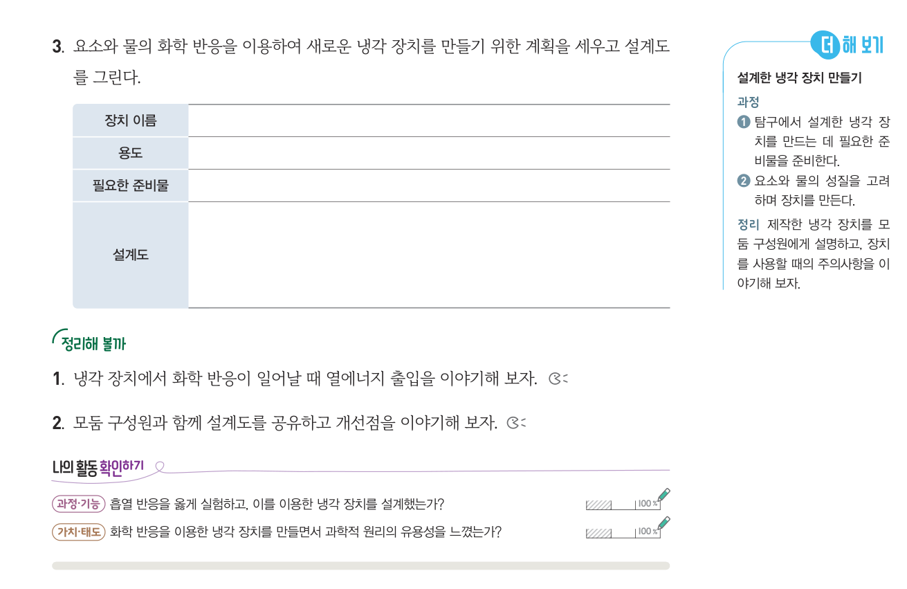
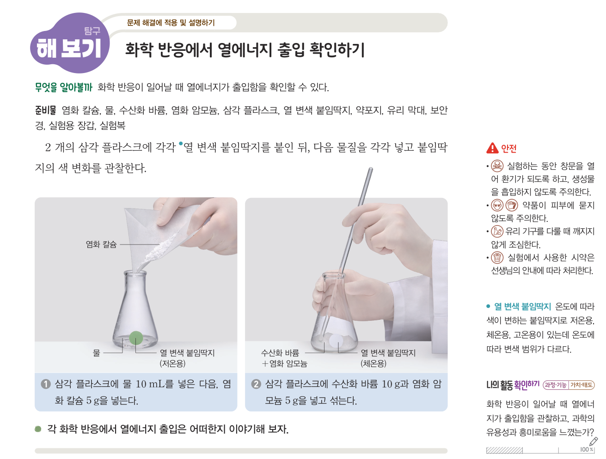
[핵심 이론] STS 수업 모형(Yager): 문제로의 초대 → 탐색 → 설명 및 해결 방안 제시 → 실행. 실행 단계에서는 학생이 해결 방안을 실제 생활·사회에 적용하고 의사 결정한 내용을 행동으로 옮긴다. 공학적 설계는 문제 정의 → 설계 → 제작 → 시험 → 개선의 반복 과정이다.
[교육과정 근거] [9과16-06] 성취기준과 탐구 활동 ‘화학 반응을 이용한 간단한 냉각 장치 만들기’, 교수·학습 방법의 다른 교과(수학, 기술, 공학, 예술 등)와의 통합·연계.
[채점 포인트] STS 단계명은 정확한 용어로. 환기 문제는 생성되는 기체를 흡입할 위험과 연결해야 한다. 흡열 오개념 교정은 ‘주변의 열에너지를 흡수 → 주변 온도 하강’이라는 열의 이동 방향을 명시해야 만점.
[출제 포인트] [9과16-06] 성취기준과 교육과정 탐구 활동명 원문, 교수·학습 방법 원문 빈칸(공학). STS 수업 모형 단계(2021 화학 A7, 2023 화학 B5) + 탐구 활동 시 안전 유의점(환기) + 흡열 반응 오개념(‘차가운 기운’).